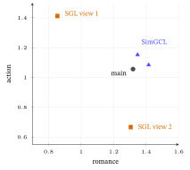
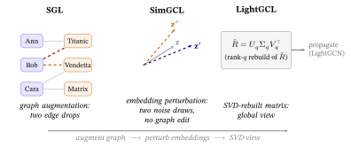
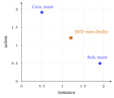
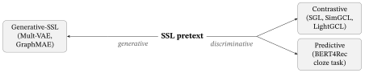
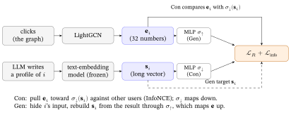
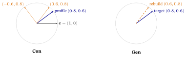

11 Self-Supervised & Contrastive Learning
LightGCN (He et al., 2020), the graph recommender of the previous chapter, learns from clicks alone, and clicks are few: on MovieLens 20M, a standard film data set, only 0.53% of the user-by-film table is filled (§1). This chapter adds a training signal that needs no labels: show the model two slightly damaged copies of the same user and ask it to give both copies nearly the same vector. It builds up to RLMRec (representation learning with large language models for recommendation; §7), which uses a large language model’s written description of a user as the second copy.
What this chapter assumes. From Graphs to LightGCN (graph, bipartite graph, adjacency matrix, embedding, graph convolution, LightGCN; its cast Ann, Bob, Cara and three films returns here), Linear Algebra for Machine Learning §4 (dot product, cosine) and §6 (the singular value decomposition, for §5), Loss Functions & Regularizers §9 (Bayesian personalized ranking, BPR), Calculus for Machine Learning §5 (gradient descent) and Neural Networks & Back-propagation §6 (the mini-batch training loop), and, each explained where it is used, Probability & Statistics for Machine Learning §2, §3 and §7, Evaluation Metrics §4 and §7, and Loss Functions & Regularizers §2.4, §6, §10 and §11. Not assumed, and built here from zero: contrastive learning, the InfoNCE (information noise-contrastive estimation) loss, alignment and uniformity, self-supervised pretext tasks, and how a language model’s text can serve as a training signal; no earlier reading of any paper cited here is needed.
1. Why self-supervised learning? The sparsity problem
Ann has watched one film on a site with thousands, so the model learns almost nothing about the thousands she did not watch: it trains on clicks, and clicks are rare. This section puts a number on how rare and names the one idea the chapter uses to learn more from the same data.
LightGCN, the last of the GCN (graph convolutional network) → NGCF (neural graph collaborative filtering; Wang et al., 2019) → LightGCN chain of From Graphs to LightGCN §14, gives every user and every film a vector and trains those vectors on one signal: the observed clicks, pairs such as “Ann clicked Titanic”. Its loss, BPR (Loss Functions & Regularizers §9), pushes each clicked film’s score above that of a film the user did not click. Two things go wrong.
The first is that the table of clicks is nearly empty. Make a table with one row per user and one column per film: a cell is filled when that user clicked that film. The toy of From Graphs to LightGCN has 3 users and 3 films, so 9 cells, and 5 of them are filled, 56%. A toy is not sparse. A real site is about 100 times emptier.
The table below, How empty the table is, sets the two side by side.
| users | films | cells | interactions (ratings) | filled | |
|---|---|---|---|---|---|
| toy of From Graphs to LightGCN | 3 | 3 | 9 | 5 | 56% |
| MovieLens 20M (ML-20M) | 138,493 | 27,278 | 3,777,812,054 | 20,000,263 | 0.53% |
A model that learns a vector for each film from a table that is 99.5% empty has little to go on. The second is that the clicks pile up. In From Graphs to LightGCN §13 a blockbuster with 1,000 watchers is nudged 1,000 times per epoch (one pass over all the training clicks) and a small film with one watcher once. The popular films get well-trained vectors, and the long tail of small films is starved.
The idea this chapter follows is self-supervised learning (SSL): invent a second training task whose answers the data already contains, so that no new labels are needed. Such an extra task is an auxiliary task. It can help because every click is used twice (in the toy, 5 clicks would train two things each), once to rank films and once to check that a user’s vector survives a small damage to her history. The checks need no new clicks, so users and films with few clicks are trained by them too. (How much it helps is a claim of the papers of this chapter, not tested here.) The model trains on the main task, BPR, and the auxiliary task together: \[ \mathcal{L} = \underbrace{\mathcal{L}_{\text{BPR}}}_{\text{main: rank clicks}} + \;\lambda\, \underbrace{\mathcal{L}_{\text{ssl}}}_{\text{auxiliary: free structure}}. \]
Here \(\lambda\) (lambda) is a small positive weight that decides how much the auxiliary task counts against the main one: at \(\lambda=0\) you are back to plain LightGCN. LightGCN is the backbone of this chapter, meaning the base model that the extra loss is added to (on the toy, LightGCN and its 5 clicks stay the backbone whatever extra loss is added). §3.4 puts numbers on \(\lambda\).
The auxiliary term acts as a regularizer (a term added to a loss to keep the vectors well behaved; §3.3 works a pull that costs 0.40) that shapes the geometry of the vectors: spreading them out and making the model robust to small damage. It comes in several flavors; this chapter follows two, contrastive (compare two copies of a node, §3) and generative (rebuild a hidden part of the input, §6), and §6 places a third, predictive.
In one line: real click tables are under 1% full (ML-20M: 0.53%), so SSL manufactures a training signal from clicks the model already has.
2. The variant landscape branching out of LightGCN
Ann’s site could run many recommenders built on LightGCN. This section lists four that change the model or its inputs, then the family this chapter follows. Skim it on a first read: the last row is the road.
| Method | The one change to LightGCN | The claim in its paper |
|---|---|---|
| UltraGCN (ultra-simplified graph convolutional network; Mao et al., 2021) | no layers: an extra loss term pushes each vector to where infinitely many layers of averaging would leave it | beats the graph models it was compared with and trains more than 10 times faster than LightGCN |
| GF-CF (graph-filter collaborative filtering; Shen et al., 2021) | no training: a filter computed once from the click table | competitive with or better than trained deep-learning methods on three data sets |
| DGCF (disentangled graph collaborative filtering; Wang et al., 2020) | each vector is split into chunks, one per intent (genre, mood), and averaged chunk by chunk | better than earlier models on three data sets, with intents the authors examine for interpretability |
| HCCF (hypergraph contrastive collaborative filtering; Xia et al., 2022) | a hypergraph, a graph whose edges (hyperedges) may join many nodes at once (one hyperedge can join the three films that the same group of users clicked), is contrasted with the ordinary graph | better than earlier methods on three data sets and robust to sparse clicks; it returns in §4 |
| SGL (self-supervised graph learning), SimGCL (simple graph contrastive learning), LightGCL (light graph contrastive learning) (§3–§5) | a contrastive loss is added to training | the road of this chapter |
The first four rows change the model or its inputs; the last row leaves the model alone and changes only the training signal. That last row is the one this chapter follows: it keeps collaborative filtering (CF), recommending from the pattern of who interacted with what, exactly as it is and changes only the training signal. A reminder from From Graphs to LightGCN §14 and §15: a well-tuned matrix-factorization (MF) model, which learns one vector per user and per film with no graph at all, or a training-free filter, is reported to stay competitive once tuned (not tested here).
In one line: four of the five rows change the model or its inputs (UltraGCN, GF-CF, DGCF, and HCCF, which adds a hypergraph and also trains by contrast, as its title and abstract say, §4); one changes only the training signal, and this chapter follows it from SGL to SimGCL to LightGCL.
3. Graph Contrastive Learning (GCL) — fundamentals
Ann’s click history is thin and Bob’s only a little thicker, and no new labels are coming. The idea of this section is to let the model test itself: show it two slightly damaged copies of the same person (called views, defined next) and ask for the same answer. It builds that test, a loss called InfoNCE (information noise-contrastive estimation), runs it on three vectors, and says what it does to the space.
3.1 The core rule
An augmentation is a small change to the input that should not change what it is: a photo flipped or cropped is still the same cat (this recipe comes from image learning; Chen et al., 2020b, SimCLR, a simple framework for contrastive learning of visual representations). A view is the result of three steps: augment the input, encode it, read off one embedding per node. (LightGCL, §5, also counts its un-augmented pass as one view.)
The encoder is whatever turns raw inputs into those embeddings. Here it is LightGCN’s propagation. It starts from the table of raw identifier (ID) vectors, one per user and one per item, before any averaging. It then averages each vector over its neighbors, layer by layer, and the result is every node’s final embedding. Both views go through the same encoder; only the augmentation differs. Make two views of every node and ask for one rule:
Pull two views of the same node together; push different nodes apart.
The two views of one node are a positive pair; a view of one node and a view of a different node are a negative pair. The loss that compares the views is InfoNCE, built from scratch in §3.2.
A toy, with the previous chapter’s cast. Bob watched Titanic and Vendetta. View 1: delete his Titanic edge and run LightGCN on the thinned graph; out comes an embedding \(\mathbf{z}'_{\text{Bob}}\). View 2: delete his Vendetta edge instead; out comes \(\mathbf{z}''_{\text{Bob}}\). Each view deletes one of his 2 edges and keeps \(2-1=1\). Both are still Bob, so we ask the model to make them agree: his embedding may depend only on what survives the deletions, his stable taste, not on any single click. It must also point away from Ann’s and Cara’s embeddings. (Bob, not Ann, because Ann has one edge: she cannot lose a different edge in each view.) §4 runs this with numbers: the two views of Bob end up 32 degrees apart.

3.2 The InfoNCE loss
The InfoNCE loss (information noise-contrastive estimation: “Info” for the shared information it rewards, NCE for noise-contrastive estimation, the older idea of learning by telling real data from noise) is the standard contrastive objective (van den Oord et al., 2018, who introduced it), and the \(\mathcal{L}_{\text{ssl}}\) of §1 whenever the auxiliary task is contrastive. Two words first. Softmax turns scores into shares: exponentiate each score and divide by the total. Scores 2 and 1 become \(e^2=7.389\) and \(e^1=2.718\), shares \(0.731\) and \(0.269\); the larger score gets the larger share, and a gap of 1 is worth a 73–27 split (Probability & Statistics for Machine Learning §3). A vector of length 1 is a unit vector: \((0.8,0.6)\) has length \(\sqrt{0.64+0.36}=1\).
Now the loss, written \(\mathcal{L}_{\text{cl}}\) (“cl” for contrastive loss). Here, and in the rest of the chapter and in its solutions, \(\log\) means the natural logarithm, \(\ln\), the inverse of \(\exp\); on a calculator press the “ln” key, since the “log” key is base 10 and gives different numbers (the example below shows how different).
\[ \mathcal{L}_{\text{cl}} = \sum_{i} -\log \frac{\exp\!\big(\operatorname{sim}(\mathbf{z}_i', \mathbf{z}_i'')/\tau\big)} {\sum_{j}\exp\!\big(\operatorname{sim}(\mathbf{z}_i', \mathbf{z}_j'')/\tau\big)} \]
(The sum over \(j\) runs over all nodes including \(i\) itself, so the positive pair sits in both the numerator and the denominator. Some implementations sum only over \(j\neq i\). On the worked example below that gives \(-1.00\) instead of \(0.31\) (the positive’s share becomes \(54.60/20.14=2.71\), above \(1\), so the log is positive and the loss turns negative), so check a paper’s convention before comparing numbers.)
The pieces, in words (this chapter explains meaning, not derivations):
- \(i\) is the index of the anchor node. The outer sum runs over the users in the current mini-batch, a small random group of examples (say 256, so each node has 255 others to contrast with) used for one training step (Neural Networks & Back-propagation §6), and then a second, identical sum runs over the items: a user is contrasted with other users, an item with other items, never a user against an item.
- \(j\) is any node in the same sum as \(i\) (users when \(i\) is a user, items when \(i\) is an item).
- \(\mathbf{z}_i', \mathbf{z}_i''\) are node \(i\)’s two views (its two augmented embeddings, §3.1).
- \(\operatorname{sim}\) is cosine similarity (Linear Algebra for Machine Learning §4): how aligned two vectors are, in \([-1,1]\), with \(+1\) the same direction and \(0\) unrelated. So the loss talks about directions, not magnitudes.
- \(\tau\) is the temperature: it divides every similarity before the softmax. Small \(\tau\) means sharper contrast, a loss that focuses hard on the closest negatives; a sensitive knob. For a similarity gap of \(0.2\), a weight changes by a factor \(e^{0.2}=1.22\) at \(\tau=1\) but \(e^{2}=7.39\) at \(\tau=0.1\).
- The numerator rewards the positive pair \((\mathbf{z}_i',\mathbf{z}_i'')\) for agreeing; the denominator sums over all nodes \(j\), so it pushes \(i\) away from every other node, the negatives.
Symbols, reconciled. Loss Functions & Regularizers §2.4 writes the same loss with an anchor \(\mathbf{z}\), a positive \(\mathbf{z}^+\) and negatives \(\mathbf{z}_k\). Here the anchor is \(\mathbf{z}_i'\), its positive is \(\mathbf{z}_i''\) (the same node seen a second time) and the negatives are the other nodes’ second views \(\mathbf{z}_j''\). In this chapter \(i\) and \(j\) index any node, user or item; they are not the “item \(i\) / item \(j\)” of the ranking chapters.
Worked example — one node, one positive, two negatives. Take node \(i\)’s anchor view \(\mathbf{z}_i'=(1,0)\) and its positive (second view) \(\mathbf{z}_i''=(0.8,\,0.6)\), with two other nodes as negatives, \(\mathbf{z}_a''=(0.6,\,0.8)\) and \(\mathbf{z}_b''=(-0.6,\,0.8)\). All four are unit vectors (length 1), so cosine similarity is just the dot product. With temperature \(\tau=0.2\):
| pair | \(\operatorname{sim}\) | \(\operatorname{sim}/\tau\) | \(\exp(\operatorname{sim}/\tau)\) |
|---|---|---|---|
| positive \(\mathbf{z}_i''\) | \(0.8\) | \(4.0\) | \(54.60\) |
| negative \(\mathbf{z}_a''\) | \(0.6\) | \(3.0\) | \(20.09\) |
| negative \(\mathbf{z}_b''\) | \(-0.6\) | \(-3.0\) | \(0.05\) |
The denominator sums all three, about \(74.73\). The positive’s softmax share is \(54.60/74.73=0.731\), so node \(i\)’s contrastive loss is \[\mathcal{L}_{\text{cl},i}=-\log(0.731)=0.31.\] On a calculator the “ln” key gives the chapter’s \(0.31\), while the base-10 “log” key would give \(0.136\). The check is \(-\ln 0.731=0.31\). Read it as a tug-of-war: the positive already takes \(73\%\) of the probability, so the loss is small but not zero — the negative at similarity \(0.6\) is close enough to steal some share. Alignment (§3.3) raises the positive’s similarity; uniformity (§3.3) lowers the negatives’ (push the \(0.6\) neighbor away).
What \(\tau\) actually does, on these same three numbers. Redo the worked example at three temperatures. A mild \(\tau=1\) gives exponents \(0.8,\,0.6,\,-0.6\) and the near negative \(\mathbf{z}_a''\) holds only \(77\%\) of the negatives’ share, leaving \(23\%\) for the far one \(\mathbf{z}_b''\). At the chapter’s \(\tau=0.2\) that split is \(99.75\%\) / \(0.25\%\), and at \(\tau=0.05\) the positive takes almost everything.
| \(\tau\) | the positive’s share | loss \(-\log(\text{share})\) |
|---|---|---|
| \(1\) | \(0.484\) | \(0.725\) |
| \(0.2\) | \(0.731\) | \(0.314\) |
| \(0.05\) | \(0.982\) | \(0.018\) |

That is what “small \(\tau\) = sharper contrast” means numerically: as \(\tau\) shrinks, the loss stops noticing the far negative and spends its whole push on the closest rival. Whether that is good depends on whether the closest vector is the positive: the blue curve falls, the orange one climbs.
Link to an earlier chapter. This is the InfoNCE introduced from zero in Loss Functions & Regularizers §2.4, and the same shape as the sampled-softmax ranking loss of Loss Functions & Regularizers §10: a positive contrasted against many negatives, scaled by \(\tau\), with a softmax turning scores into shares. The only difference from sampled softmax is what counts as the positive: there it is an item the user clicked; here it is a second view of the same node. So InfoNCE is not new machinery, just a new choice of “positive.”
3.3 What InfoNCE actually optimizes: alignment + uniformity
Wang & Isola (ICML 2020) showed, for images, that a contrastive loss optimizes two things in the limit as the number of negatives grows. This chapter, like the recommender papers met below, reads both as helpful for recommendation:
- Alignment: a positive pair ends up close (two views of the same node here; in the negative-free method below, a user and an item she interacted with).
- Uniformity: embeddings spread evenly over the unit hypersphere, the set of all length-1 vectors: a circle in 2-D, a ball’s surface in 3-D, and the same idea in \(d\) dimensions. (Cosine similarity ignores length, so every embedding can be pictured as a point on it.) Spreading them directly is aimed at representation collapse, the failure in which every node is mapped to one and the same vector (for a 256-node batch the loss then sits at \(\log 256\approx5.55\), in the box below); that scores the worst uniformity, \(0\). It is also meant to counter popularity bias (the papers’ claim). Here popularity bias is the §1 long-tail problem, worked numerically in From Graphs to LightGCN §13.
Why spreading may help the tail. In From Graphs to LightGCN §13 the blockbuster \(P\) drifted to the center of the user cloud, so it scored high for everybody, while the niche item \(Q\), with its single click, was nudged once per epoch against \(P\)’s thousand and scored low for everybody but its one fan. That is this chapter’s reading of the toy; the SimGCL paper and the DirectAU (direct alignment and uniformity) paper argue in the same direction, though not through this example. The reading is that vectors crowd together in this way and that uniformity penalizes it.
Uniformity pushes every embedding away from every other, so (i) \(P\) is pushed off the one spot that is close to all users and (ii) \(Q\) is pushed out into a direction of its own, where its one click is enough to aim it at the handful of users who want it. SimGCL reports (§4) that it is the uniformity the loss induces, not the cleverness of the augmentation, that does the work. This is a claim of those papers, not tested here: the toy of this chapter is too small to show a before and after for the tail.
In numbers, the uniformity score of the example below is \(0\) for a total pile-up and \(-1.17\) for its three spread views; that gap is what the term is paid to widen, and, as above, the link from it to the tail is the chapter’s reading.
The negative-free alternative. InfoNCE earns alignment and uniformity indirectly, through the positive-versus-negatives softmax. DirectAU (direct alignment and uniformity; Wang et al., KDD 2022) optimizes the two directly, with no negatives. Its positive pair is not two views of one node: it is a user and an item that user interacted with, such as Ann and Titanic, and the alignment term pulls them together. Uniformity is measured separately over users and over items.
The formulas below are Wang & Isola’s. They are written for vectors of length 1, so scale every vector to length 1 first (§3.2’s four vectors already are; the LightGCN user vectors of §4 are about 1.7 to 1.9 long, which is why §4 uses cosines instead). We use them on §3.2’s vectors; DirectAU applies the same squared distance to interacting pairs (Loss Functions & Regularizers §11).
Alignment. The squared distance between a positive pair’s two vectors pulls them together: \[\mathcal{L}_{\text{align}}=\lVert \mathbf{z}_i'-\mathbf{z}_i''\rVert^2\]
Uniformity. Here \(\mathbf z_i\) and \(\mathbf z_j\) are the vectors of two different nodes in the batch, one view each. The log of the mean, over all such pairs \((i,j)\), of a Gaussian potential (a bell-shaped score: \(1\) at distance \(0\), falling toward \(0\) as the distance grows) spreads everything out: \[\mathcal{L}_{\text{uniform}}=\log\Big(\operatorname{mean}_{i\neq j}\; e^{-2\lVert \mathbf{z}_i-\mathbf{z}_j\rVert^2}\Big)\] Here \(e\) is the ordinary exponential base \(2.718\ldots\) (not an embedding), and the potential is near \(1\) for two points sitting on top of each other and near \(0\) for two far apart, so a low \(\mathcal{L}_{\text{uniform}}\) means well spread.
Both terms, on §3.2’s numbers. The positive pair \(\mathbf{z}_i'=(1,0),\,\mathbf{z}_i''=(0.8,0.6)\) gives \(\mathcal{L}_{\text{align}}=\lVert(0.2,-0.6)\rVert^2=0.40\) — small, because the two views are only \(37^\circ\) apart (cosine \(0.8\)), and driving it to \(0\) does the same job as the InfoNCE numerator, with no denominator to sum. For uniformity, take the three second views \((0.8,0.6)\), \((0.6,0.8)\), \((-0.6,0.8)\): their three squared distances are \(0.08\), \(2.00\) and \(1.44\), the potentials \(e^{-2(0.08)}=0.8521\), \(e^{-2(2.00)}=0.0183\), \(e^{-2(1.44)}=0.0561\), and \[\mathcal{L}_{\text{uniform}}=\log\big(\tfrac{0.8521+0.0183+0.0561}{3}\big)=\log(0.3089)=-1.17.\] Three points spread perfectly evenly (\(120^\circ\) apart) would score \(-6.0\); three points collapsed onto one point score \(\log 1 = 0\), the worst possible uniformity. Lower means more spread.

Two failure modes (and how the loss names them). Both can be read off as a loss value on small examples like §3.2’s.
- Representation collapse. The encoder maps every node to the same vector, so all similarities equal \(1\), positives and negatives alike. Every node’s softmax share is then \(1/N\) (with \(N\) nodes in the batch) and the loss settles at exactly \(\log N\), the collapse value: for a 256-node batch, \(\log 256\approx 5.55\). Alignment alone cannot see it, because a collapsed space makes every positive pair identical and alignment scores perfectly there. The uniformity term does: a collapsed space has zero spread, the worst uniformity (\(0\) in DirectAU’s form), and it gets pushed apart. (Generative SSL has a mirror-image failure, a trivial identity map; §6.)
- \(\tau\) too small, shown by a hard case. Shrinking \(\tau\) sharpens the softmax onto the single closest pair, a feature only if the positive is closest. Keep §3.2’s positive at similarity \(0.8\) but let a hard negative (a negative that looks very like the anchor) sit closer, at \(0.9\) (a two-term softmax: the positive and that one negative). The loss on that node rises from \(0.97\) at \(\tau=0.2\) to \(2.13\) at \(\tau=0.05\) (the orange curve of the figure Loss against temperature). One pair now dominates every training step and training gets brittle, so \(\tau\) is a sensitivity dial, not a “smaller is always better” one. (Only the \(0.1\) gap between positive and negative matters here, not the two similarities themselves.)
The collapse value is not a maximum. InfoNCE can exceed \(\log N\): for cosine scores at a fixed \(\tau\) the loss is at most \(\log N+2/\tau\) (it is unbounded only as \(\tau\to0\)), and the two-term example of the box reaches \(2.13\), where \(\log 2\approx0.69\).
3.4 The joint objective
\[ \mathcal{L} = \mathcal{L}_{\text{BPR}} + \lambda\,\mathcal{L}_{\text{cl}}. \]
This is the generic SSL objective of §1, \(\mathcal{L}_{\text{BPR}}+\lambda\mathcal{L}_{\text{ssl}}\), with the contrastive choice \(\mathcal{L}_{\text{ssl}}=\mathcal{L}_{\text{cl}}\). BPR does the ranking; the contrastive term regularizes the geometry. \(\lambda\) (how much SSL) and \(\tau\) (contrast sharpness) are the two sensitive hyperparameters: settings you fix before training and choose by trying values on held-out data (films whose clicks were kept out of training, to test the model on data it has not seen), as opposed to the numbers that gradient descent (repeated small downhill steps on the loss; Calculus for Machine Learning §5) learns for you.
What \(\lambda\) does, in numbers. Take the BPR loss of From Graphs to LightGCN §15 on its triple, \(\mathcal{L}_{\text{BPR}}=0.027\), and §3.2’s contrastive loss at \(\tau=0.2\), \(\mathcal{L}_{\text{cl}}=0.314\). (The two come from different examples; only their sizes matter here.) Four values of \(\lambda\) show how the total, and the share of it that is SSL, move.
| \(\lambda\) | \(\lambda\,\mathcal{L}_{\text{cl}}\) | total | SSL share of total | SSL / BPR |
|---|---|---|---|---|
| \(0\) | \(0\) | \(0.027\) | \(0\%\) | \(0\) |
| \(0.05\) | \(0.016\) | \(0.043\) | \(37\%\) | \(0.6\) |
| \(0.5\) | \(0.157\) | \(0.184\) | \(85\%\) | \(5.8\) |
| \(5\) | \(1.570\) | \(1.597\) | \(98\%\) | \(58.1\) |

Where it plugs into the LightGCN loop, and on which embeddings. A common beginner trap is to contrast the raw lookup embeddings \(E^{(0)}\), the ID table: one freely trainable vector per user identifier and per item identifier, before any neighbor-averaging. You do not. The contrastive loss runs on the layer-combined final embeddings, the \[\mathbf{e}_u=\sum_{k=0}^{K}\alpha_k\,\mathbf{e}_u^{(k)}\] that LightGCN already produces (From Graphs to LightGCN §12, §14), the same vectors BPR scores with.
Here \(\mathbf{e}_u^{(k)}\) is user \(u\)’s vector after \(k\) rounds of neighbor-averaging (\(\mathbf{e}_u^{(0)}\) being its row of \(E^{(0)}\)), \(K\) is the number of propagation layers and the mixing weights \(\alpha_k\) are usually all equal to \(1/(K+1)\) (From Graphs to LightGCN’s example: \(K=2\), weights \(1/3\)). (XSimGCL, extremely simple graph contrastive learning, §4, NCL (neighborhood-enriched contrastive learning), §4, and, as published, LightGCL, §5, which sums its InfoNCE over every layer, are exceptions: XSimGCL contrasts a node’s final embedding against that node’s embedding at an earlier layer, and NCL pairs a node’s layer-0 vector with its layer-2 vector.) One training step is the loop below.
for each mini-batch (u, p, n): # u = a user; p = an item u clicked;
# n = a sampled item u did not click
E_main = propagate(original graph) # un-augmented; these are what BPR scores
E1 = propagate(view 1) # dropped-edge / noised graph
E2 = propagate(view 2) # SVD graph (LightGCL) or a 2nd noise draw
# all three give LAYER-COMBINED final embeddings, one per node
L_bpr = bpr(E_main, u, p, n) # rank: score = <e_u, e_item>
L_cl = infonce(E1, E2, tau) # the batch's other nodes are negatives
loss = L_bpr + lam * L_cl # one scalar (lam is the weight lambda)
loss.backward() # back-propagation: the gradient of the
# total loss for every embedding
opt.step() # move each embedding one small step
# against its gradientLightGCL uses E_main as view 1, so it calls infonce(E_main, E2, tau) and makes only two passes; XSimGCL gets all three from one pass.
In SGL and SimGCL the two views are two extra forward passes through one shared encoder, on top of the main pass: three in all. LightGCL’s main pass doubles as one of the two views, and §4 shows how XSimGCL gets everything from a single pass. “Shared” is worth unpacking for LightGCN, which From Graphs to LightGCN showed has no weight matrices at all: its only trainable parameters are the ID table \(E^{(0)}\), so sharing the encoder here means every pass reads and updates that one table. That is how “shaping the geometry” and “ranking clicks” become one update.

The settings below are what the SimGCL and LightGCL papers report, plus one typical value of the chapter’s own; they are a starting point, not tested here.
| Setting | Value or range | Source |
|---|---|---|
| temperature \(\tau\) | \(0.2\) | set by SimGCL, which says SGL’s paper reports it as best |
| weight \(\lambda\) | best at \(0.2\) (Douban-Book), \(0.5\) (Yelp2018) and \(2\) (Amazon-Book) | SimGCL’s sensitivity sweep |
| noise radius \(\varepsilon\) (§4) | \(0.1\) | SimGCL: best near \(0.1\) on all three data sets |
| edge or node drop ratio | \(0.1\) | the chapter’s typical value, not checked against the SGL paper |
| rank \(q\) of the singular value decomposition (SVD); \(\tau\); \(\lambda_1\) | \(q=5\); \(\tau\in\{0.3,0.5,1,3,10\}\); \(\lambda_1\in\{10^{-7},10^{-6},10^{-5}\}\) | LightGCL (its paper’s search grid) |
In practice the denominator’s “all nodes \(j\)” means the other nodes in the current mini-batch, called in-batch negatives (255 of them in a batch of 256): summing over the whole catalog at every step would be far too costly. A larger batch brings more (and harder) negatives, which in practice shifts the best \(\tau\) and \(\lambda\) (a claim from practice, not tested here), so batch size is part of the hyperparameter choice.
In-batch negatives carry two hazards. A false negative is a batch-mate that is in fact a match for the anchor, pushed away as though it were not (Cara, for Bob: she shares his Vendetta, and her view sits at cosine \(0.998\) from his, closer than his own second view at \(0.850\), as the §4 table Bob’s row of the InfoNCE sum shows). And popular items turn up among the in-batch negatives far more often than rare ones (an item drawn 1 time in 2 is a negative 5 times as often as one drawn 1 time in 10), so they are penalized far more often.
Production fixes this skew with the log-\(Q\) correction (\(Q\) here is an item’s sampling probability, not the niche film of §3.3), which subtracts each item’s log sampling probability from its score. An item drawn 1 time in 10 has \(\ln 0.1=-2.30\), so subtracting it adds \(2.30\) to its score; an item drawn 1 time in 2 gets only \(0.69\). The correction is not worked further here; negative sampling and the correction are covered in Training and Serving a Recommender §3.
In one line: InfoNCE is a softmax in which a node’s own second view must beat the other nodes’ (loss \(0.31\) at \(\tau=0.2\)); \(\tau\) sets how hard it looks at the nearest rival (the loss on §3.2’s vectors goes from \(0.73\) to \(0.02\) as \(\tau\) goes from \(1\) to \(0.05\)); \(\lambda\) sets how much it counts against BPR (\(37\%\) of the total at \(\lambda=0.05\), \(98\%\) at \(5\)).
4. The view-construction question
Bob has two films in his history, and the model is asked to recognise him from two damaged copies of it. The damage can be done by deleting some of his clicks or by shaking his vector a little. This section builds the copies for each method of the field, measures how far apart Bob’s two copies end up, and compares the methods by that distance and by their losses.
Every graph contrastive method differs in one design choice: how it makes the two views.
| Method | Authors, venue | How it builds the two views | What its paper reports (not tested here) |
|---|---|---|---|
| SGL (self-supervised graph learning) | Wu et al., SIGIR 2021 | Augment the graph structure: random node-drop, edge-drop or random walk (a path that steps along random edges), then propagate each damaged graph | Better accuracy, especially on long-tail items, and more robustness to noisy interactions; it can also mine hard negatives (negatives close to the anchor, §3.3) |
| SimGCL (simple graph contrastive learning) | Yu et al., SIGIR 2022 | No graph change: add a small random nudge to each embedding | Structure augmentation contributes little; the more even spread of vectors that the loss induces does most of the work |
| XSimGCL (extremely simple graph contrastive learning) | Yu et al., TKDE (early access 2023) | SimGCL’s journal successor: one noised pass, contrasting a node’s final embedding with its own earlier-layer embedding | One pass per mini-batch, the pass count of plain LightGCN (the chapter’s count, not the paper’s claim), because the same perturbed vectors also feed BPR |
| NCL (neighborhood-enriched contrastive learning) | Lin et al., WWW 2022 | Change the positive: a node’s neighbors, structural and semantic, instead of a noisy copy of it | Gains of 26% on Yelp and 17% on Amazon-book (two review data sets, described in §7) over a competitive baseline |
| HCCF (§2) | Xia et al., SIGIR 2022 | Contrast a local graph view against a global hypergraph view | Group-level collaborative signal |
| LightGCL (§5) | Cai et al., ICLR 2023 | Second view from a truncated SVD of the interaction matrix | A global view built from the whole click table; its paper argues that random drops can lose important information |
The rest of the section runs the first four rows on one graph, the path of From Graphs to LightGCN that holds Ann, Bob, Cara and three films.
SGL: delete edges
Ann – Titanic – Bob – Vendetta – Cara – Matrix is the path graph of From Graphs to LightGCN §8, with the starting vectors of From Graphs to LightGCN §4 and the layer-combined vectors at \(K=2\), weights \(\tfrac13\), of From Graphs to LightGCN §12: the vectors that §3.4 says the contrastive loss runs on. It has 5 edges. “Drop a fraction \(\rho\) of the edges” means delete a random subset of that size; one edge in 5 is \(\rho=0.2\).
Two views, as §3.1 promised. View 1 deletes Bob–Titanic, view 2 deletes Bob–Vendetta. Each view is a whole LightGCN pass on its thinned graph, with every degree recounted. With Bob–Titanic gone, Titanic has one watcher, so Ann’s weight on Titanic rises from \(0.707\) to \(1\): her vector changes although none of her edges was touched.
| user | main (no drop) | view 1 (no Bob–Titanic) | view 2 (no Bob–Vendetta) |
|---|---|---|---|
| Ann | \([1.589,\,-0.764]\) | \([2,\,-1.333]\) | \([1.638,\,-0.667]\) |
| Bob | \([1.319,\,1.056]\) | \([0.854,\,1.412]\) | \([1.305,\,0.667]\) |
| Cara | \([0.833,\,1.68]\) | \([0.868,\,1.749]\) | \([0.902,\,1.707]\) |
Bob’s two views are \([0.854,1.412]\) and \([1.305,0.667]\): cosine \(0.850\), about \(31.8^\circ\) apart. Cara’s two views have cosine \(1.000\) (to three places; \(0.9997\) with more): the deleted edges are not hers, and the one that touches her film Vendetta turns her vector by only \(1.5^\circ\). Ann’s \(0.980\) is the Titanic degree change reaching her.
Now run §3.2’s loss on these views at \(\tau=0.2\). Take Bob’s view 1 as the anchor. His view 2 is the positive; Ann’s view 2 and Cara’s view 2 are the negatives.
| pair | \(\operatorname{sim}\) | \(\operatorname{sim}/\tau\) | \(\exp(\operatorname{sim}/\tau)\) |
|---|---|---|---|
| positive: Bob’s view 2 | \(0.850\) | \(4.25\) | \(70.1\) |
| negative: Ann’s view 2 | \(0.156\) | \(0.78\) | \(2.19\) |
| negative: Cara’s view 2 | \(0.998\) | \(4.99\) | \(147.2\) |
Bob’s loss is \(-\log 0.319=1.14\). Ann’s is \(0.09\) and Cara’s \(0.33\), so the mean over the three is \(0.52\). Bob’s is the largest and the reason is plain: the anchor is closer to a negative than to its positive. His view 1 keeps only Vendetta, and Vendetta is also one of Cara’s two films, so the view points almost where Cara’s view 2 does (\(0.998\), against \(0.850\) for his own). This is the box of §3.3, a rival closer than the positive, met in a real graph.

A severed edge. Ann has one edge, to Titanic. Had the drop hit it, she would be cut off from the graph, and her layers 1 and 2 would be exactly zero: she hears nobody. Her combined view would be \(\mathbf e^{(0)}/3=[0.667,-0.667]\), still at cosine \(0.944\) (\(19.3^\circ\)) with her main vector. The combination hides the severing: a third of every combined vector is layer 0, the ID vector, which no deletion touches, so views differ only through layers 1 and 2. (As in LightGCN, the toy keeps layer 0 in the combination; SimGCL’s paper leaves it out of its final embedding.)
The cost is real: every epoch re-drops the edges and re-propagates, so on top of the main pass that BPR scores there are two more, three propagations per training step. This is a toy of the recipe (one thinned graph per view, shared by all layers), not a replication of SGL, which also uses node dropout and random walks.
SimGCL: add noise
SimGCL skips graph surgery and perturbs the embeddings. For an embedding \(\mathbf z\), a view is \(\mathbf z'=\mathbf z+\varepsilon\,\Delta\), where \(\Delta\) is a random unit vector and \(\varepsilon\approx0.1\) sets the radius. (\(\Delta\) is drawn from a uniform distribution, a fact about the noise that has nothing to do with the uniformity of §3.3.)
\(\Delta\) is kept in \(\mathbf z\)’s orthant, the region where the signs of all coordinates are fixed (the high-dimensional analogue of a quadrant). The noise then nudges the vector rather than flipping a sign.
One vector, two draws. Take \(\mathbf z=[0.6,0.8]\), in the \((+,+)\) quadrant, so \(\Delta\) must have two non-negative entries. Draw \(\Delta'=[0.96,0.28]\), a unit vector (\(0.96^2+0.28^2=1\)). Then \[\mathbf z'=[0.6,0.8]+0.1\,[0.96,0.28]=[0.696,\;0.828],\] the perturbation has length \(0.1\), and it turns the vector by about \(3.2^\circ\) (down, because \(\Delta'\) is shallower than \(\mathbf z\); \(\cos(\mathbf z,\mathbf z')=0.9985\)). A second draw \(\Delta''=[0.28,0.96]\) gives \(\mathbf z''=[0.628,\,0.896]\), a turn of \(1.8^\circ\) the other way (up, because \(\Delta''\) is steeper).
The two views are the pair that matters: \(\mathbf z'\) and \(\mathbf z''\) are \(5.0^\circ\) apart (cosine \(0.9962\)), further than either is from \(\mathbf z\), because their turns point opposite ways. Only the part of \(\Delta\) that points across \(\mathbf z\) changes its direction; the cosine of §3.2 is blind to the rest. Because \(\Delta\) shares \(\mathbf z\)’s signs, that crossways part stays small: at \(\varepsilon=0.1\) no in-orthant draw turns this \(\mathbf z\) by more than about \(4.3^\circ\) (it comes from \(\Delta=[1,0]\)).
The three users. Give each user these two draws, signs copied from her own vector (Ann’s second coordinate is negative, so her noise is subtracted there). Bob’s views become \([1.415,1.084]\) and \([1.347,1.152]\): \(3.1^\circ\) apart, cosine \(0.999\). Against SGL’s \(0.850\) the positive pair is much closer.
Under noise Bob’s loss is \(0.50\), against \(1.14\) for SGL, but Cara’s is higher (\(0.55\) against \(0.33\)), and the mean over the three falls from \(0.52\) to \(0.37\). So a gentler change does not always give a smaller loss for every user. It gives one sure thing: the positive pair is closer, \(0.999\) against \(0.850\) for Bob. The table at the end of this section, Bob’s pair, and the loss, by method, sets the methods side by side.
How large a nudge? The vectors here are about \(1.7\) long, so \(\varepsilon=0.1\) is a tiny shake. Raise it and the positive pair separates: at \(\varepsilon=0.5\) Bob’s two views have cosine \(0.975\) (\(12.9^\circ\) apart) and the mean loss is \(0.41\); at \(\varepsilon=2\) the cosine is \(0.855\) (\(31.2^\circ\)) and the mean loss \(0.48\). The noise must be 20 times its usual radius to push Bob’s views about as far apart as two deleted edges did (\(31.8^\circ\) against \(31.2^\circ\)).
SimGCL’s own explanation of why noise works, reported in its paper and not tested here: the gain comes mainly from the more even spread of vectors that the loss induces, not from the graph edits. The toy is too small to show it.
The cost: no adjacency is rebuilt each epoch, but each view is still a full noised LightGCN pass (as published, SimGCL adds fresh noise after every layer, so the one-shot formula above simplifies). SimGCL therefore runs the same three propagations per mini-batch as SGL. What it drops is the per-epoch graph rebuilding and the risk of cutting a real edge.
XSimGCL: one pass
XSimGCL asks a sharper question: if the noise is tiny, why run extra passes at all? It runs one noised pass and contrasts each node’s final embedding with that same node’s embedding at an earlier layer, such as layer 1. The same perturbed vectors go to BPR. One forward and backward pass per mini-batch instead of three; at prediction time the model runs clean. Its abstract says it beats the graph-augmentation methods it compares with in accuracy and training efficiency. The pass count is this chapter’s own: one pass per mini-batch, as many as plain LightGCN.
One number, noise left out. Bob’s layer 1 is \([1.5,0.5]\) and his final vector \([1.319,1.056]\), so their cosine is \[\frac{1.5\cdot1.319+0.5\cdot1.056}{1.581\cdot1.690}=0.938,\] about \(20.2^\circ\) apart. A pair this far apart already differs only because the layers have heard different neighborhoods.
NCL: neighbors as positives
NCL changes what counts as a positive instead of how a view is built. The structural positive is a node’s own embedding paired with the output of an even-numbered layer, which has gathered its same-type neighbors. For Bob that is his starting vector \([1,2]\) and his layer-2 vector \([1.457,0.668]\): cosine \(0.779\), \(38.8^\circ\) apart.
The semantic positive uses a prototype, the center of the cluster of look-alike nodes a node falls into. The clusters are found with the EM (expectation-maximization) algorithm interleaved with training: guess the clusters from the current embeddings, improve the embeddings against those clusters, repeat. A toy, separate from the cast: four users sit at \((2,0)\), \((1.6,0.4)\), \((0,2)\) and \((0.4,1.6)\) in the romance–action plane, in two clusters (the romance pair and the action pair) with centers \((1.8,0.2)\) and \((0.2,1.8)\). The user at \((2,0)\) takes \((1.8,0.2)\) as her semantic positive: cosine \(0.994\), \(6.3^\circ\) apart.
| method | what pairs | Bob’s pair: cosine | angle | loss: Ann, Bob, Cara | mean loss |
|---|---|---|---|---|---|
| SGL | his two views, two edges deleted | \(0.850\) | \(31.8^\circ\) | \(0.09, 1.14, 0.33\) | \(0.52\) |
| SimGCL, \(\varepsilon=0.1\) | his two noised views | \(0.999\) | \(3.1^\circ\) | \(0.06, 0.50, 0.55\) | \(0.37\) |
| SimGCL, \(\varepsilon=0.5\) | the same two draws, scaled | \(0.975\) | \(12.9^\circ\) | \(0.05, 0.45, 0.73\) | \(0.41\) |
| SimGCL, \(\varepsilon=2\) | the same two draws, scaled | \(0.855\) | \(31.2^\circ\) | \(0.05, 0.47, 0.92\) | \(0.48\) |
| XSimGCL (noise left out) | layer 1 and final, one pass | \(0.938\) | \(20.2^\circ\) | not computed | not computed |
| NCL (structural pair) | layer 0 and layer 2 | \(0.779\) | \(38.8^\circ\) | not computed | not computed |
The trajectory in one line: augment the graph (SGL), then, as the SimGCL paper reports, embedding noise does as well (SimGCL), then build the second view from the whole click table instead of from random edits (LightGCL, §5).

Should you add SSL, and which method? SSL is not free, and it does not always help.
- When it pays (everything in this box is a common expectation, not tested here): sparse interaction data, a heavy long tail and many cold items (items with almost no clicks yet) or niche ones, the failure modes of §1. The contrastive term spreads the starved tail out instead of letting it collapse.
- When it barely moves the needle: dense data with a strong collaborative signal, or a model already rich in side features (information beyond clicks, such as genre or text).
- The cost per method, in passes over the graph per step:
- SGL is the priciest: two extra full propagations per step plus rebuilding the dropped-edge graph every epoch.
- SimGCL removes the rebuilding but still runs two extra noised propagations, about the same three passes. Plain LightGCN needs one pass.
- XSimGCL needs one pass too, as many as plain LightGCN.
- LightGCL pays a one-time SVD and then needs two passes, because its main pass doubles as one of the two views.
- RLMRec’s paper reports about 1.7 to 1.9 times LightGCN’s epoch time on Amazon-book, and up to about 2.1 times on Yelp and Steam (§7).
Default, the chapter’s reading of the SimGCL and XSimGCL papers’ own defaults: reach for SimGCL first (\(\varepsilon\approx0.1\), and a \(\lambda\) from the \(0.2\) to \(2\) that SimGCL’s sweep found best, in the settings table of §3.4), because it needs no graph surgery and has one easy knob (\(\varepsilon\); \(\lambda\) and \(\tau\) stay sensitive, §3.4), and move to XSimGCL if three passes per step are what hurts.
In one line: SGL deletes edges (Bob’s two copies end \(31.8^\circ\) apart, and his loss is \(1.14\) because Cara’s copy looks closer to him than his own second copy), SimGCL adds noise (\(3.1^\circ\)), and XSimGCL contrasts two layers of one pass (\(20.2^\circ\)).
5. LightGCL in depth (ICLR 2023)
Cutting edges and shaking vectors are both guesses: a cut can hit the one edge that mattered, and noise knows nothing about the site. Bob’s second copy can instead be built from the few strongest tastes shared across the site’s users. This section builds that copy with a singular value decomposition (SVD), on the Bob-and-Cara corner of the previous chapter’s graph, and counts what it costs.
LightGCL’s answer (Cai et al., 2023): build the second view with a truncated SVD of the interaction matrix.
What an SVD is, in a paragraph. A table of numbers can be written as a sum of simple patterns, ranked by how much of the table each pattern explains. This is the singular value decomposition (SVD), built in Linear Algebra for Machine Learning §6. Each pattern comes with a singular value, its strength. Keeping only the strongest few patterns and dropping the rest is a truncated SVD. Here the table is the click table, so the patterns are the site’s strongest shared tastes: the click table of Bob and Cara below has two patterns, of strength 1 and 0.707, and keeping only the first is a truncated SVD.
Three matrices, three letters, fixed for the rest of this section. \(R\) is the raw \(\text{users}\times\text{items}\) interaction matrix: a 1 where a user clicked an item. \(\tilde{R}\) is \(R\) normalized. \(\hat{R}\) is the rank-\(q\) rebuild of \(\tilde{R}\). They never swap roles.
- Take the normalized interaction matrix \(\tilde{R}\), the \(1/\sqrt{\deg}\)-normalized \(\text{users}\times\text{items}\) matrix. It is not the square symmetric adjacency of From Graphs to LightGCN §7: the SVD needs the rectangular one, which is why \(U_q\) is user-side and \(V_q\) item-side.
- Compute its truncated SVD (the top \(q\) singular values; the number \(q\) is the rank you keep: \(q=1\) keeps one singular value, \(q=5\) keeps five) and name the product: \[\tilde{R} \;\approx\; U_q\,\Sigma_q\,V_q^\top \;=:\; \hat{R}.\] \(U_q\) and \(V_q\) hold the \(q\) strongest user-side and item-side patterns (think of tastes or genres), \(\Sigma_q\) holds how strong each is, and \(V_q^\top\) is \(V_q\) written as rows. The sign is \(\approx\), not \(=\), on purpose: throwing away the weak singular values is the denoising. What stays in \(\hat{R}\) is the dominant, global collaborative signal.
- Propagate with \(\hat{R}\) to get one view; propagate normally with \(\tilde{R}\) (LightGCN) for the other; contrast them with InfoNCE (§3.2). The contrast is two-view: LightGCL contrasts the SVD view against the main LightGCN embeddings, unlike SGL and SimGCL, which build two extra views on top of the main pass and keep the main embeddings out of the contrastive term.
A tiny SVD, all the way through. Take the Bob-and-Cara corner of the previous chapter’s graph, with Ann set aside: Bob watched Titanic and Vendetta, Cara watched Vendetta and Matrix. Then \[R=\begin{bmatrix}1&1&0\\0&1&1\end{bmatrix}\quad(\text{rows Bob, Cara; columns Titanic, Vendetta, Matrix}).\] Normalizing each entry by \(1/\sqrt{\deg u\cdot\deg i}\) (degrees \(2,2\) for the users and \(1,2,1\) for the films) gives \[\tilde{R}=\begin{bmatrix}0.707&0.5&0\\[2pt]0&0.5&0.707\end{bmatrix}.\]
Its singular values are \(\sigma_1=1\) and \(\sigma_2=0.707\), and a pencil check shows why (each pattern needs two products, \(\tilde R\mathbf v=\sigma\mathbf u\) and \(\tilde R^\top\mathbf u=\sigma\mathbf v\)). With \(\mathbf u_1=[0.707,\,0.707]\) and \(\mathbf v_1=[0.5,\,0.707,\,0.5]\), the product \(\tilde R\mathbf v_1\) is \([0.707\cdot0.5+0.5\cdot0.707,\ 0.5\cdot0.707+0.707\cdot0.5]=[0.707,\,0.707]=1\cdot\mathbf u_1\), and \(\tilde R^\top\mathbf u_1=[0.5,\,0.707,\,0.5]=1\cdot\mathbf v_1\). The second pattern, \(\mathbf u_2=[0.707,\,-0.707]\) and \(\mathbf v_2=[0.707,\,0,\,-0.707]\), gives \(\tilde R\mathbf v_2=[0.5,\,-0.5]=0.707\cdot\mathbf u_2\) and \(\tilde R^\top\mathbf u_2=[0.5,\,0,\,-0.5]=0.707\cdot\mathbf v_2\). Keep only the first pattern (\(q=1\)): \[\hat{R}=\sigma_1\,\mathbf u_1\mathbf v_1^\top= \begin{bmatrix}0.354&0.5&0.354\\[2pt]0.354&0.5&0.354\end{bmatrix}.\] Look at the top-right cell. Bob never watched Matrix, so that cell of \(R\) is a plain \(0\), yet \(\hat{R}\) gives it weight \(0.354\). The one dominant pattern has filled in a plausible missing edge. That is what global and denoised buys, and what a random edge drop can never do.
Now the two views of one layer, with the previous chapter’s film vectors Titanic \([2,0]\), Vendetta \([1,1]\) and Matrix \([0,2]\) stacked into \(E_{\text{items}}\): \[\begin{aligned} \text{main view } \tilde{R}E_{\text{items}}&:\ \text{Bob }[1.914,\,0.5],\ \text{Cara }[0.5,\,1.914];\\ \text{SVD view } \hat{R}E_{\text{items}}&:\ \text{both }[1.207,\,1.207]. \end{aligned}\] Bob’s main and SVD views have cosine \(0.863\), an angle of \(30.4^\circ\): two different descriptions of the same user, which gives InfoNCE something to reconcile.

Both users get the same SVD view: the limit of the toy. With two users and \(q=1\) one pattern is left, so the two rows of \(\hat{R}\) coincide (cosine \(1.0\)), and the SVD view cannot tell Bob from Cara. It is not a property of the method. Keeping \(q=2\) of 2 keeps everything and \(\hat{R}=\tilde{R}\). The paper uses \(q=5\) on tens of thousands of users, where the rows differ.
The spectrum, one step back. Put Ann back. The whole graph’s \(3\times3\) matrix \(\tilde{R}\) (Ann–Titanic; Bob–Titanic, Bob–Vendetta; Cara–Vendetta, Cara–Matrix) has singular values \(1\), \(0.809\) and \(0.309\). These are exactly the three non-negative eigenvalues (an eigenvalue is the factor by which a matrix stretches or shrinks one of its basic patterns; The Spectral / Graph-Filter View needs the idea, the exercises here do not) of the previous chapter’s \(6\times6\) normalized adjacency (§7 there), the same strengths seen from the square matrix. The \(0.809\) is the factor by which the slowest-fading pattern fades per layer in §12 of that chapter. So keeping the strongest few singular values is the low-pass filter of The Spectral / Graph-Filter View.
The factored trick: why it is lightweight. You never build the dense rebuilt matrix \(\hat{R}\), which is \(\text{users}\times\text{items}\). For the MovieLens-20M film-ratings data set (ML-20M) that is \(138{,}493\times27{,}278=3{,}777{,}812{,}054\approx3.78\times10^9\) entries (§1). Instead, one layer of the SVD view is \[ G_{\text{svd}} = \hat{R}\,E_{\text{items}} \;=\; U_q\big(\Sigma_q\,(V_q^\top E_{\text{items}})\big), \] where \(G_{\text{svd}}\) holds the user embeddings this view produces, one row per user, and \(E_{\text{items}}\) holds the item embeddings, one row per item (\(d\) columns each). Items get their view the mirror-image way, from \(\hat{R}^\top E_{\text{users}}\).
You evaluate the product right to left. \(V_q^\top E_{\text{items}}\) first (a \(q\times d\) matrix), then scale by \(\Sigma_q\), then multiply by \(U_q\); every intermediate is tiny because \(q\) is small. On the toy, \(V_1^\top E_{\text{items}}=[1.707,\,1.707]\), then \(\times\sigma_1=1\), then \(\times u_{1,1}=0.707\), giving \([1.207,\,1.207]\): the same answer, with no \(2\times3\) matrix ever formed.
The saving in numbers. With \(U_q\Sigma_q\) and \(V_q\Sigma_q\) cached once, a layer costs \(O\big((\text{users}+\text{items})\,q\,d\big)\) instead of the dense \(O(\text{users}\cdot\text{items}\cdot d)\) (\(O\) reads “grows in proportion to”: the work scales with that product of sizes, up to a constant factor). For \(10^5\) users, \(10^5\) items, \(q=5\) and \(d=32\) that is about \(3.2\times10^7\) (\(2\cdot10^5\cdot5\cdot32\)) against \(3.2\times10^{11}\) (\(10^5\cdot10^5\cdot32\)) multiply-adds, a \(10{,}000\times\) saving. That is against the dense rebuild; the main pass already pays for a sparse pass over the real clicks, which costs about clicks \(\times\,d\), here \(3.2\times10^7\) for a site with about \(10^6\) clicks. The \(10^5\)-user site is hypothetical, and the whole count is a cost model, not a measurement. The SVD itself is run once, in practice by a randomized SVD, a fast approximate method that uses random projections to find only the top \(q\) singular vectors.
What the LightGCL paper reports, not tested here. The rank \(q=5\) is enough to keep the important structure; \(\tau\) (§3.2) is searched over \(\{0.3,0.5,1,3,10\}\) and the weight \(\lambda_1\) (§3.4) over \(\{10^{-7},10^{-6},10^{-5}\}\). It reports better accuracy than the methods it compares with and more robustness to sparse data and popularity bias.
The published method against this chapter’s toy. The paper applies edge dropout (deleting random edges, as in SGL) to the main graph and node dropout (deleting a random set of nodes) in each batch, sums its InfoNCE over every layer, adds a second weight \(\lambda_2\) on the size of the model’s parameters, and trains the ranking with a pairwise hinge loss (its Eq. 7), \(\max(0,\,1-\hat y_{u,\text{pos}}+\hat y_{u,\text{neg}})\) (zero once the clicked film’s score beats the unclicked one’s by 1, and the shortfall otherwise), instead of BPR. The chapter’s simplification, “propagate normally with \(\tilde{R}\) and train with BPR”, leaves all of these out, so the toy has no dropout of any kind.
Why its authors favor it (their argument, not tested here):
- Global, not random. A few hops of LightGCN propagation reach only local structure (the previous chapter: 2 to 4 layers before over-smoothing). The SVD view carries information about the whole user–item structure into every node in one shot.
- Lightweight. A low-rank SVD is cheap and computed once, so no second view has to be rebuilt every epoch, and a layer costs \(10{,}000\times\) fewer multiply-adds than the dense product in the example above (a cost model, not a measurement).
- Connected to the spectral view (The Spectral / Graph-Filter View, §6). Keeping the few strongest singular values is the low-pass filtering of the spectral chapter: keep the smooth collaborative signal, drop the noisy detail.
In one line: LightGCL’s second copy is a rank-\(q\) rebuild of the click table: global, noise-free, and it fills cells the data left empty (Bob–Matrix \(0.354\)), at a cost, for \(10^5\) users and items, about \(10{,}000\) times below the dense rebuild.
6. Four paradigms: discriminative, generative, contrastive, predictive
Ann’s site now has two ways to invent a free training task: compare two damaged copies of a user (§3 to §5), or hide a piece of the input and ask the model to rebuild it. Papers argue about which is which because four words, discriminative (tell answers apart), generative (learn how the data is made), contrastive (compare two damaged copies) and predictive (guess a label read off the data), are used as if they sat in one list. They sit on two axes. This section sorts them, then scores both recipes with one number each on small vectors, which is what §7 needs.
6.1 Axis 1 — discriminative vs. generative (what the model learns)
The classical split (Ng & Jordan, 2002) is about which probability a model represents.
- A discriminative model represents the conditional probability \(p(y\mid x)\), the probability of an answer \(y\) given an input \(x\): a label or a score. It learns only the boundary between answers and cannot create new data. Examples: logistic regression (a weighted sum of the inputs turned into the probability of a yes) and, in our case, LightGCN with BPR, which tells “clicked” from “not clicked”, that is, ranks.
- A generative model represents the data itself, \(p(x)\) (or the joint \(p(x,y)\)): how the data is produced. It can sample new data. Examples: variational autoencoders (VAEs) such as Mult-VAE (multinomial VAE; Liang et al., 2018; sidebar below); autoregressive large language models (LLMs), which write text one word at a time; and, outside recommendation, generative adversarial networks (GANs) and diffusion models, which learn to produce images.
One picture. Cats vs. dogs. A discriminative model learns the single line that separates them. A generative model learns what a cat looks like and what a dog looks like, then classifies by asking “which is more likely to have produced this image?” and, as a bonus, can draw a new cat. (Loss Functions & Regularizers §6 showed that a loss is a \(-\log\)-likelihood. The two families differ in which likelihood: a discriminative model’s loss is \(-\log p(y\mid x)\), how likely the label is given the input, while a generative model’s is \(-\log p(x)\), how likely the data itself is.)
6.2 Axis 2 — the SSL pretext taxonomy (how you invent the free task)
SSL (§1) needs a pretext task, the name the self-supervised literature gives to §1’s auxiliary task: a fake, label-free objective built from the data’s own structure. The two words mean the same thing; you will meet both. Pretext tasks come in three flavors.
- Contrastive: “are these two views the same instance or not?” Pull a node’s two views together and push other nodes apart (InfoNCE, §3). In recommendation: SGL, SimGCL and LightGCL (§4, §5), and the contrastive variant of RLMRec (§7), which aligns a user’s graph embedding with a language model’s written description of that user.
- Predictive: “predict a property derived from the data itself.” One ground-truth answer is computed from the data, and no negatives are needed. Generic example: predict by how many degrees an image was rotated. In recommendation: predict a masked item in a user’s sequence, or a masked node attribute or cluster id.
- Generative: “reconstruct the masked or corrupted input.” Rebuild the whole signal, not a small label. In recommendation: Mult-VAE (rebuild the click vector), the graph masked autoencoder GraphMAE (below), and the generative variant of RLMRec (§7). An autoencoder is any network trained to reproduce its own input through a narrow middle layer (say, a 6-number click vector squeezed into 2 numbers and rebuilt as 6).
A predictive example, BERT4Rec (bidirectional encoder representations from Transformer networks for recommendation; Sun et al., 2019). A random fraction of the items in a user’s sequence is replaced by a special mask token, and the model predicts each hidden item’s identifier from the items around it: a fill-in-the-blank, or cloze, task. The loss is cross-entropy over the whole item list, the minus log of the probability given to the right item (Loss Functions & Regularizers §6).
A predictive loss, as a number. Shrink the catalog to 4 items. For the hidden slot the network gives the four items the scores \(3,\,1,\,0,\,0\), the right item having score \(3\). The softmax of §3.2 turns them into the shares \(0.810,\,0.110,\,0.040,\,0.040\), so the loss is \(-\log 0.810=0.21\). The other three items do sit in the denominator, but nobody chose them as negatives and nothing was sampled: the denominator is the whole catalog, fixed by the task. There is no second view either; the target is a label read off the data, which is what makes the task predictive and not contrastive.
A generative example, GraphMAE (graph masked autoencoder; Hou et al., KDD 2022). It hides some nodes’ input features, runs a network, and rebuilds the hidden features. Its paper uses it to classify nodes and whole graphs, and tests it on node classification, graph classification and transfer learning, not on recommendation; using it as a recommender example is this chapter’s adaptation.
On a featureless recommendation graph the “features” are the nodes’ input embeddings or any side information attached to them. Its loss is a scaled cosine error, the mean over the hidden nodes of \((1-\cos(\mathbf x,\mathbf z))^{\gamma}\) with \(\gamma\ge 1\), where \(\mathbf x\) is the true feature vector and \(\mathbf z\) the rebuilt one (as its paper writes it). At \(\gamma=1\) it is the \(1-\cos\) of §6.4: with \(\cos=0.96\), \(\gamma=1\) gives \(0.04\) and \(\gamma=2\) gives \(0.04^2=0.0016\).
Sidebar, skip on a first read. All you need is that Mult-VAE rebuilds a user’s click vector, so it is generative. It encodes the \(0/1\) vector \(\mathbf{r}\) over the whole catalog into a short code \(\mathbf{h}\) through an encoder \(q(\mathbf{h}\mid \mathbf{r})\) (this \(q\) is a distribution, not §5’s rank) that outputs a distribution over codes, and a decoder \(p_\theta(\mathbf{r}\mid \mathbf{h})\) rebuilds \(\mathbf r\).
The loss has two terms, a rebuilding term and a Kullback–Leibler (KL) divergence (in the paper the KL term carries a weight \(\beta\), annealed up to a cap often below \(1\): Loss Functions & Regularizers §11; it is left out here): \[\mathcal{L} = -\mathbb{E}_{\mathbf{h}\sim q}\big[\log p_\theta(\mathbf{r}\mid \mathbf{h})\big] + D_{\mathrm{KL}}\big(q(\mathbf{h}\mid \mathbf{r})\,\big\|\,p(\mathbf{h})\big)\]
(\(\mathbb{E}\) is the average over the random codes \(\mathbf h\) that \(q\) produces.) The first rewards faithful rebuilding through a multinomial log-likelihood (Probability & Statistics for Machine Learning §2); the second, the KL divergence of that chapter’s §7, pulls the code’s distribution toward a prior, typically \(\mathcal{N}(0,I)\) (the plain bell-shaped cloud centered at \(0\), the shape the codes are asked to resemble). Because \(\mathbf h\) must carry enough to rebuild the whole click vector, the model is forced to learn a compact summary of taste. It is the one strict generative example, and the table Contrastive vs generative SSL lists its loss.
6.3 How the two axes fit together (the key clarification)
The pretext flavors are not a separate list: each inherits a mechanism from Axis 1 (the generative-versus-contrastive split is the organizing axis of Liu et al., 2021). In this chapter’s own reading, contrastive and predictive are both discriminative, since they score or classify, and generative SSL is generative, since it reconstructs. The quickest diagnostic is whether the method has to choose negatives: contrastive yes (other nodes’ views; DirectAU: no, §3.3), predictive and generative no (for a plain reconstruction error; RLMRec-Gen is the exception, §7). The predictive softmax runs over the whole catalog, which is a fixed set and not a choice.
Count what each loss touched in §3.2, §6.2 and §6.4: the contrastive example used 4 vectors (an anchor and three candidates: its positive and 2 negatives), the predictive one 4 scores over a fixed catalog, the generative one 2 vectors (the rebuild and its target).
Careful with the word “generative.” Generative SSL borrows the generative style, rebuild the input through a decoder, but not always the full §6.1 property of being able to sample new data. This chapter therefore files all three of its generative-side methods, Mult-VAE, GraphMAE and RLMRec-Gen, under one family name, “generative / reconstructive” (the label of Axis 1 in the tables and glossary). Only Mult-VAE generates new data in the strict sense: it can draw a plausible new user. GraphMAE and RLMRec-Gen (§7) reconstruct masked input, which is a conditional job; they cannot invent a user from nothing. Same family of mechanisms, weaker claim.
So the three flavors end differently. Contrastive methods, as built in this chapter, have no output layer: InfoNCE compares the embeddings directly, through cosines (§3.2 and the figure One training step (SGL / SimGCL)); RLMRec’s multi-layer perceptron (MLP) in §7 maps one embedding space into another before the comparison, and is not an output layer onto the catalog.
Predictive methods such as BERT4Rec end in a head, a small output layer that turns the embeddings into scores over the catalog (the 4 scores \(3,1,0,0\) of the predictive loss above are a head’s output), trained with a cross-entropy loss. Generative SSL ends in a decoder, a network that turns an embedding back into the input it came from (in §6.4’s generative loss, its output is the rebuilt vector \((0.6,0.8)\)), trained with a reconstruction loss. Calling contrastive and predictive both “discriminative” is this chapter’s own reading, not a standard label.

Contrastive and predictive, the subtle pair, differ only in their target. Contrastive compares instance against instance and needs negatives (DirectAU, §3.3, is the exception; any positive view works; there is no single “correct” vector), while predictive has one correct answer derived from the data and needs none. (Some surveys fold predictive into contrastive or generative; the recommender-systems SSL survey of Yu et al., 2024, keeps contrastive, generative and predictive as distinct families, plus “hybrid.”)
6.4 In recommendation, the live contest is contrastive vs. generative
Predictive pretext tasks do appear in recommendation (sequence masking), but the two families this chapter follows, and the two that RLMRec ships as its variants (§7), are contrastive and generative:
| Contrastive | Generative (reconstructive) | |
|---|---|---|
| Core question | “Are these two views the same or different?” | “Can I reconstruct the signal?” |
| Mechanism | pull positive pairs together, push negatives apart | mask or corrupt input, then regenerate it |
| Needs negatives? | yes, chosen by the method (the InfoNCE denominator; DirectAU: no, §3.3) | not by a plain reconstruction error; RLMRec-Gen’s score (its Eq. 17) sits inside the Eq. 18 ratio, whose denominator runs over profiles (§7) |
| Typical loss | InfoNCE (§3.2), or alignment + uniformity (§3.3) | a reconstruction error: mean squared error (MSE, the average of the squared differences between entries), scaled cosine error (GraphMAE) or a log-likelihood (Mult-VAE) |
| Graph examples | SGL, SimGCL, LightGCL, NCL, HCCF | GraphMAE (KDD 2022: node features hidden, then rebuilt), RLMRec-Gen (§7) |
| Main risk | sensitive to \(\tau\) (§3.2), \(\lambda\) (§3.4), choice of negatives and augmentation | can learn a trivial identity map, copying the input to the output and learning nothing about taste, if too little is masked: with nothing hidden, copying already gives a perfect reconstruction |
| Intuition | shapes the geometry of the space (uniformity) | forces embeddings to carry enough information to rebuild the signal |
A generative loss, as a number. Every worked example so far has been contrastive, so here is the other family in the same style. Hide (mask) user \(u\)’s input and let the network rebuild the vector the pretext task asks for: for GraphMAE that is \(u\)’s input features, for RLMRec-Gen (§7) a vector written by a language model. Suppose the rebuild comes out as \(\hat{\mathbf s}=(0.6,\,0.8)\) while the true target is \(\mathbf s=(0.8,\,0.6)\). Both vectors have length 1, so \(\cos=\hat{\mathbf s}\cdot\mathbf s=0.48+0.48=0.96\). Score it either way: \[\lVert\hat{\mathbf s}-\mathbf s\rVert^2=(-0.2)^2+(0.2)^2=0.08 \;\Rightarrow\; \text{MSE}=\tfrac{0.08}{2}=0.04, \qquad 1-\cos(\hat{\mathbf s},\mathbf s)=1-0.96=0.04 .\]
Notice what is absent: no other user appears anywhere in that computation, and there is no denominator to sum. That is what “no negatives” means for a plain reconstruction error, which is the chapter’s teaching toy here. It is not RLMRec-Gen itself: the paper puts Gen’s cosine (its Eq. 17) inside the ratio of its Eq. 18, so other users’ profiles do enter there (§7).
In one line: contrastive losses compare copies and need negatives (loss \(0.31\) on §3.2’s example); a plain reconstruction error needs none (\(0.04\) on one pair of vectors, with no other user in the sum), though RLMRec’s own Gen variant is written inside a ratio (§7). As intuition, not a tested result: contrastive organizes the space, generative makes the code informative enough to rebuild the signal, and RLMRec (§7) offers both.
7. RLMRec — using both families, with the LLM as the “second view”
A user’s clicks say what she watched, not what she is like. A language model can read a film’s description and write one for her. The second copy of a user can be that written profile. This section shows RLMRec, which does exactly this in the two ways of §6 (contrast and rebuild), works both ways out by hand on §3.2’s vectors, and says what its paper does and does not show. The wider picture, the four roles a language model can play in a recommender, is in Large Language Models and Recommendation.
RLMRec (representation learning with large language models for recommendation; Ren et al., WWW 2024, arXiv 2310.15950, from the HKUDS research group) keeps a collaborative backbone such as LightGCN. The backbone gives every node its GNN (graph neural network) embedding \(\mathbf e\), exactly the layer-combined LightGCN output of §3.4; the paper uses 32 numbers per node. RLMRec also asks a large language model (LLM) to write a text profile of each item and each user (the paper uses OpenAI’s gpt-3.5-turbo, with item profiles first and user profiles built from the profiles of the user’s items), and a text-embedding model (the paper uses OpenAI’s text-embedding-ada-002) turns each profile into a long vector \(\mathbf s\), its semantic embedding.
The profile is the second view that §3 to §5 manufactured artificially, except that it carries the meaning of words instead of noise or a rebuilt table.
The two vectors are not comparable as they stand: \(\mathbf e\) is short and lives in the space of the click graph, \(\mathbf s\) is much longer and lives in a space that knows nothing of clicks. You cannot take a cosine of the two. So RLMRec passes one of them through a small trained network, a multi-layer perceptron (MLP, a few ordinary neural-network layers), that maps it into the other’s space (the maps are written \(\sigma_\downarrow\) and \(\sigma_\uparrow\) below, unrelated to §5’s singular values \(\sigma\)).
The two variants, as the paper writes them (its Eqs. 16 to 18; reported there, not tested here). Both score a pair by \(f(\mathbf s_i,\mathbf e_i)=\exp(\operatorname{sim})\), with \(\operatorname{sim}\) the cosine of §3.2:
- RLMRec-Con (contrastive): \(f(\mathbf s_i,\mathbf e_i)=\exp\!\big(\operatorname{sim}(\sigma_\downarrow(\mathbf s_i),\mathbf e_i)\big)\), where the MLP \(\sigma_\downarrow\) maps the semantic vector down into the collaborative space. The pair \((\mathbf e_i,\mathbf s_i)\) is the positive; the other users in the batch are the negatives (worked below: \(0.31\) on §3.2’s vectors).
- RLMRec-Gen (generative): \(f(\mathbf s_i,\mathbf e_i)=\exp\!\big(\operatorname{sim}(\mathbf s_i,\sigma_\uparrow(\hat{\mathbf e}_i))\big)\), where \(\hat{\mathbf e}_i\) is node \(i\)’s embedding computed with its own input replaced by a mask token, and \(\sigma_\uparrow\) maps it up into the semantic space. A random subset of nodes is masked, and the loss is taken on them only (worked below on the chapter’s toy with a plain reconstruction error: \(0.04\) on one pair).
- Both train with \(\mathcal L=\mathcal L_R+\mathcal L_{\text{info}}\), where \(\mathcal L_R\) is the backbone’s own loss and \(\mathcal L_{\text{info}}=-\mathbb E\log\big[f(\mathbf s_i,\mathbf e_i)\big/\sum_{\mathbf s_j}f(\mathbf s_j,\mathbf e_i)\big]\) (its Eq. 18: weight 1, no temperature; \(\mathbb E\) is an average over training examples).
That last line is §3.2’s softmax-share loss with a new positive. The two small examples below use §3.2’s vectors; to stay in two dimensions they skip the MLP and take the mapped vectors as given.

Con, on §3.2’s example. Let user \(i\)’s embedding be \(\mathbf e=(1,0)\). Let the LLM’s profile of \(i\), mapped into the same space, be \((0.8,0.6)\), and the mapped profiles of two other users be \((0.6,0.8)\) and \((-0.6,0.8)\). These are exactly §3.2’s anchor, positive and negatives, so with \(\tau=0.2\) the loss is §3.2’s \(0.31\): only the source of the second view changed, from a noised copy to a written profile. (\(\tau=0.2\) is §3.2’s choice. The paper’s equation has no temperature, which is \(\tau=1\), and on these vectors that gives \(0.73\).) Now let the profile disagree with the clicks, the two negatives staying as they were.
| profile’s similarity to \(\mathbf e\) | positive’s share | loss |
|---|---|---|
| \(0.8\) | \(0.731\) | \(0.31\) |
| \(0.0\) | \(0.047\) | \(3.05\) |
| \(-0.6\) | \(0.0025\) | \(6.00\) |
A caution. Do not read the table as “pulling \(\mathbf e\) toward its profile always lowers the loss”. Turn \(\mathbf e\) by \(20^\circ\) toward \((0.8,0.6)\) and its similarity to its own profile rises from \(0.80\) to \(0.96\), but its similarity to the near negative \((0.6,0.8)\) rises faster, from \(0.60\) to \(0.84\), and the loss goes from \(0.31\) up to \(0.44\). In the table above only the positive’s similarity changes. Turning \(\mathbf e\) moves all three similarities at once, so it can go either way, and in a real batch the other users’ vectors move too.
Gen, on §6.4’s pair. Hide user \(i\)’s input, run the backbone, and map the result up into the semantic space: suppose the rebuilt profile vector is \(\hat{\mathbf s}=(0.6,0.8)\) against the true \((0.8,0.6)\). The error is \(0.04\) as a mean squared error and \(0.04\) as \(1-\cos\) (§6.4). The paper’s Eq. 17 scores a rebuild by the same cosine, placed inside the ratio above, so in the paper’s Gen the other users’ profiles do enter the denominator (it does not say more about how they are chosen). The \(0.04\) is the chapter’s toy, the plain reconstruction error with no other user in the sum; it is not RLMRec-Gen’s loss, which this chapter does not compute.

Why the framing is not just a slogan. For a batch of \(N\) nodes, \(\log N\) minus the InfoNCE loss is a lower bound on the mutual information (MI) between the two views, how much knowing one tells you about the other (two fair coin flips that always agree share \(\log 2=0.69\), two independent flips share \(0\); van den Oord et al., 2018; the paper’s Theorem 2 uses it; Probability & Statistics for Machine Learning §7): \(\text{MI}\ \ge\ \log N-\mathcal{L}_{\text{cl}}\). The bound is for the loss averaged over a batch.
As an illustration only, take §3.2’s example as a batch of \(N=3\) with an average loss of \(0.3139\): the bound reads \(\log 3-0.3139=0.78\) (one node’s loss is not a batch average, so this is a picture of the arithmetic, not a measurement); at full collapse, where \(\mathcal{L}_{\text{cl}}=\log N\) (§3.3), it drops to \(0\). So a lower average loss raises the guaranteed floor on the shared information between the views, which is not the same as raising the mutual information itself.
Recall@K and NDCG, before the results. Recall@K: hide some of the films a user watched, train on the rest, and ask the model for her top \(K\) films. Recall@K is the share of her hidden films that appear in the list (\(K\) here is the list length, not the layer count \(K\) of §3.4). With 5 hidden films and hits at ranks 2, 7 and 15, Recall@10 is \(2/5=0.4\) and Recall@20 is \(3/5=0.6\); a longer list can only find more. Papers average it over users. Evaluation Metrics §4 gives the definition and §7 NDCG (normalized discounted cumulative gain), the same idea with credit that shrinks for a hit lower in the list.
| list length \(K\) | hits among the top \(K\) | Recall@\(K\) |
|---|---|---|
| \(10\) | \(2\) (ranks 2, 7) | \(2/5=0.4\) |
| \(20\) | \(3\) (ranks 2, 7, 15) | \(3/5=0.6\) |
The paper tests RLMRec on six backbones: the plain graph models, GCCF (graph convolutional collaborative filtering; Chen et al., 2020a), which re-examines the non-linear steps of graph convolution, and LightGCN; the contrastive SGL, SimGCL and DCCF (disentangled contrastive collaborative filtering; Ren et al., 2023), which uses disentangled contrastive learning to capture intent-wise relations; and AutoCF (automated self-supervised learning for recommendation; Xia et al., 2023), a self-supervised masked autoencoder that automates the choice of augmentation.
The three datasets are Amazon-book (book ratings and reviews from Amazon), Yelp (users and local businesses, with textual category information) and Steam (users’ written feedback on video games). The paper reports that RLMRec improves performance when added to its backbones overall, the SSL ones such as SimGCL among them (its Table 1 gives every cell, and this chapter reproduces only the LightGCN block below). (Large Language Models and Recommendation §3 points here for the numbers at each cutoff \(K\), the list length of Recall@\(K\).)
What the RLMRec paper reports (its Table 1; all figures in this paragraph are reported there, not tested here). On the LightGCN backbone and Amazon-book, averaged over 5 random initializations, RLMRec-Con lifts Recall@10 from \(0.0915\) to \(0.0969\) (+5.9%), Recall@20 from \(0.1411\) to \(0.1483\) (+5.1%) and NDCG@20 from \(0.0856\) to \(0.0903\) (+5.5%). A rise from \(0.0915\) to \(0.0969\) is \(0.0054\), about 5.4 more found per 1,000 hidden films.
| LightGCN on Amazon-book | Recall@10 | Recall@20 | NDCG@20 |
|---|---|---|---|
| base | \(0.0915\) | \(0.1411\) | \(0.0856\) |
| + RLMRec-Con | \(0.0969\) | \(0.1483\) | \(0.0903\) |
| gain | \(+5.9\%\) | \(+5.1\%\) | \(+5.5\%\) |
| + RLMRec-Gen | \(0.0948\) | \(0.1446\) | \(0.0887\) |
| gain | \(+3.6\%\) | \(+2.5\%\) | \(+3.6\%\) |
| Gen’s gain as a share of Con’s | \(0.61\) | \(0.49\) | \(0.66\) |
What else the paper shows, and what it does not:
- It repeats the test on six backbones and three datasets. Both variants generally improve the backbone, but not in every cell: Gen on GCCF and Yelp has Recall@20 \(0.1074\) against a base of \(0.1084\).
- Which variant leads follows the backbone, the paper says: Con better with GCCF and SimGCL, Gen better with AutoCF on some metrics, which itself rebuilds masked input (the authors speculate that masking acts as regularization).
- The same paper’s Table 1 shows why “some metrics”: it is mixed on AutoCF (Amazon-book Recall@20: Con \(0.1586\), Gen \(0.1581\)).
- In the LightGCN block, in Recall@10 and Recall@20, Con leads on Amazon-book and Yelp and Gen on Steam; that is our reading of the same table.
- Cost, from its Table 4 (epoch time on one server): on Amazon-book with LightGCN the base takes \(1.01\) s per epoch, Con \(1.94\) s (about \(1.9\times\)) and Gen \(1.76\) s (about \(1.7\times\)), not counting the one-off cost of writing the profiles. So RLMRec is not free either (§4).
- Its noise experiment (research question 3 of the paper) adds non-existent interactions to the training data, 5% to 25% of the training set’s size, on Amazon-book with LightGCN only. Both variants stay above plain LightGCN at every level, and Con holds up better than Gen, which the authors attribute to the noise that masking itself adds. That is noise in the clicks, not in the profiles. Shuffling the profile vectors between nodes (its Figure 4) lowers performance.
- As far as we could see in its tables and text, it has no breakdown by item popularity and no cold-item analysis, so “RLMRec helps the long tail of §1” is this chapter’s expectation, not a result of the paper. Its best-variant Recall@10 gains on LightGCN are \(5.9\%\), \(6.8\%\) and \(6.5\%\) on Amazon-book, Yelp and Steam, whose densities, as we read its Table 5, are \(1.2\times10^{-3}\), \(1.4\times10^{-3}\) and \(2.6\times10^{-3}\); they do not line up with sparsity (our reading of those two tables).
Why this chapter is one chain, not four separate topics. Read end to end, it is a single story: \[ \begin{gathered} \underbrace{\text{LightGCN}}_{\text{feature-less ID embeddings}} \to \underbrace{\text{SSL auxiliary task}}_{\text{§1 expects relief for sparsity / tail}}\\[8pt] \to \underbrace{\text{LLM = the second view}}_{\text{real semantics, not noise}} \to \underbrace{\text{contrastive vs. generative}}_{\text{how to fuse them}} \end{gathered} \]
The authors’ motivation, not tested here, is that LightGCN’s embeddings are IDs only (From Graphs to LightGCN §6 and §14): they carry nothing but who clicked what, and a written profile can supply what the clicks leave out (the paper’s Introduction). As far as we could see, the six backbones it tests are all built from IDs, so it does not compare against a backbone that already uses rich features.
In one line: RLMRec is §3’s recipe with an LLM profile as the second view. Con’s loss is \(0.31\) when the profile agrees with the clicks and \(3.05\) when it is unrelated, and on LightGCN and Amazon-book its paper reports \(+5.9\%\), \(+5.1\%\) and \(+5.5\%\).
8. Recent developments (2023–2026)
Papers keep appearing, and a student who finishes this chapter will meet names that are not in it. This section is a signpost, not a lesson, and nothing in §1 to §7 depends on it. Each paper below is in the references, and each was checked on arXiv or Crossref in mid-October 2026 for existence, title, authors, venue and date, and for what the abstract says, which is reported below in this chapter’s own words rather than quoted; nothing else was read. This chapter did not test what any of them claims; each sentence below says what its authors say.
- Three surveys, which their authors present as maps of the field: Jing et al. (2024), Ren et al. (2026) and Yi et al. (2026), the last on how the two views of §4 are built.
- LightGCN is re-examined: Lee et al. (2024) say that its simplicity has costs, and Xu et al. (2025) say they put back a learned transform.
- Filtering the click table, an idea borrowed from signal processing, in which a filter keeps some patterns of the table and damps others. Qin et al. (2025) say their polynomial filter (a filter built from powers of the graph, here with trained coefficients) is trained. Kim et al. (2025) say they use Chebyshev interpolation, a way to approximate a filter by a short sum of simple curves. Bin Rabiah and McAuley (2026) say they use a bandpass filter, one that keeps a middle band of patterns and drops the rest. Xia et al. (2024) say their method combines a filter learned from users with similar tastes and a filter for patterns common to all users, and that it beats graph-network and filter-based methods on six data sets.
- Three surveys cover language models for recommendation: Wang et al. (2024), Vats et al. (2025) and Raja et al. (2025). RLMRec (§7) is not part of this list.
In one line: these twelve papers exist as listed in the references; this chapter has not tested whether any of them changes the recipe of §3 to §7, and what each claims is what its authors say.
9. Exercises
Fifteen by-hand problems. Work them with a pencil: the numbers are kept tiny on purpose, and most reuse the chapter’s own worked example (§3.2’s similarities \(0.8/0.6/-0.6\), the temperature \(\tau\), the collapse value \(\log N\)). Problems 6, 11 and 13 use the six starting vectors of From Graphs to LightGCN §4: Ann \([2,-2]\), Bob \([1,2]\), Cara \([1,1.5]\), Titanic \([2,0]\), Vendetta \([1,1]\) and Matrix \([0,2]\). Full worked solutions are in the Solutions appendix of the book.
(compute) Re-run §3.2’s worked InfoNCE at a milder temperature, \(\tau=0.4\) (the chapter used \(\tau=0.2\)), with the same one positive and two negatives: similarities \(0.8,\ 0.6,\ -0.6\). Compute \(\exp(\operatorname{sim}/\tau)\) for each, sum them for the denominator, take the positive’s softmax share, and report the node’s loss \(\mathcal{L}_{\text{cl},i}=-\log(\text{share})\). Then report the share of the two negatives’ total held by the near negative (\(0.6\)), and say what a milder \(\tau\) did to the loss and to that share, and why.
(compute) §3.3 gives the loss at representation collapse, \(\log N\) for a batch of \(N\) nodes. Compare it with a healthy batch of \(N=4\) nodes at \(\tau=0.2\) in which the positive pair agrees perfectly (similarity \(1\)) and each of the three negatives has similarity \(0\) with the anchor. Compute the three exponentials, the positive’s softmax share and the loss, then the collapse value for \(N=4\), and say how many times smaller the healthy loss is. A second site trains with batches of \(N=64\) nodes: what is its collapse value, and what is the smallest batch size whose collapse value exceeds \(7\)?
(compute) §3.3’s box describes a node whose positive has similarity \(0.8\) and whose one rival has \(0.9\) (a two-term softmax). Compute its loss at \(\tau=0.12\) and the share the rival holds. Then find, to two decimals, the temperature at which this node’s loss reaches \(1.5\) (for a two-term softmax the loss is \(\ln\!\big(1+e^{0.1/\tau}\big)\), since the gap is \(0.1\)).
(apply) Dan has watched 4 films. View 1 deletes 2 of his edges and view 2 deletes 1 other edge. One training step holds 64 users and 32 films. (a) How many of Dan’s edges does each view keep? (b) How many terms does the denominator of Dan’s InfoNCE term have, and how many of them are negatives? Answer the same for the film Titanic’s term. (c) Counting, over users and films together, every pair of an anchor and one of its negatives, how many pairs does the step contain?
(compute) Alignment is the half of InfoNCE that pulls a positive pair together. Start from §3.2 (positive similarity \(0.8\), negatives \(0.6\) and \(-0.6\), \(\tau=0.2\)) and suppose training raises the positive’s similarity to \(1.0\) while the two negatives stay where they are. Recompute the positive’s share and the loss, and compare both with §3.2’s. What does the change say about alignment?
(apply) A beginner applies the contrastive loss to the raw lookup embeddings \(E^{(0)}\); §3.4 applies it to the layer-combined ones. Take Bob and Cara (From Graphs to LightGCN §4 and §14): their ID vectors are \([1,2]\) and \([1,1.5]\), and their layer-combined vectors are \([1.319,\,1.056]\) and \([0.833,\,1.68]\). (a) Compute the cosine of Bob and Cara in each of the two spaces. (b) With Cara as Bob’s negative, in which space does the loss meet the harder negative, and what does the beginner’s loss then push on (the vectors BPR ranks with, or others)? (c) Convert each cosine to an angle, and say how many degrees farther apart the layer-combined space puts the pair than the ID space does.
(compute) §5’s factored SVD propagation avoids ever forming the dense \(\hat{R}\). For users \(=\) items \(=1000\), SVD rank \(q=5\) and embedding dimension \(d=10\), compute the multiply-add cost of the dense layer, \(O(\text{users}\cdot\text{items}\cdot d)\), and of the factored layer, \(O((\text{users}+\text{items})\,q\,d)\), and their ratio. Then, for users \(=\) items \(=n\), write the ratio as a formula in \(n\) and \(q\), and check it against your number and against §5’s \(10^5\)-node example.
(extend) Two training logs, each with batches of \(N=128\) nodes. (a) Run A trains with InfoNCE; its loss reads \(4.86\) at epoch 10 and \(4.84\) at epoch 20, and Recall@20 has not moved. Compute the collapse value for \(N=128\), say what you suspect, and name one other cause that would give the same readings. (b) After Run A’s temperature is changed its loss falls to \(0.50\): what share of the softmax does a node’s positive now hold? (c) Run B is a mask-and-rebuild run with the scaled cosine error of §6.2 at \(\gamma=2\). One hidden node is rebuilt with cosine \(0.9\) to its true vector and another with cosine \(0.5\). Compute each loss, and say how many times larger the second is than the first at \(\gamma=2\) and at \(\gamma=1\).
(extend) RLMRec, in §7’s setting at \(\tau=0.2\). (a) Con: a user’s embedding is \(\mathbf e=(1,0)\); the mapped profiles of three users have similarity \(0.4\) (her own), \(0.6\) and \(-0.6\) to \(\mathbf e\). Compute her loss. (b) Gen, as the plain reconstruction error of §6.4: the rebuilt profile vector is \((1,0)\) and the true one \((0.8,0.6)\). Compute the mean squared error and \(1-\cos\). (c) A fourth user joins the batch of (a), and her mapped profile has similarity \(0.6\) to \(\mathbf e\). Before computing, predict whether Con’s loss for the first user rises or falls and whether the plain error in (b) changes, with a reason; then compute Con’s new loss.
(apply) You tune \(\mathcal{L}=\mathcal{L}_{\text{BPR}}+\lambda\,\mathcal{L}_{\text{cl}}\) (§3.4). On one batch \(\mathcal{L}_{\text{BPR}}=0.20\) and \(\mathcal{L}_{\text{cl}}=0.50\). (a) For \(\lambda=0.1,\ 1\) and \(10\), compute the total and the share of it that comes from the SSL term. (b) You raise \(\lambda\) from \(0.1\) to \(10\) and Recall@20 falls. Why is the training total no guide to which setting is better, and what would you compare instead? (c) On a second batch, \(\mathcal{L}_{\text{BPR}}=0.15\) and \(\mathcal{L}_{\text{cl}}=0.60\). At what \(\lambda\) does the total reach \(0.45\), and what share of it is then the SSL term? At what \(\lambda\) is the SSL term \(90\%\) of the total, and what share is it at \(\lambda=0.1\)?
(compute) DirectAU’s alignment on interacting pairs (§3.3). Scale the six starting vectors above to length 1. The interacting pairs of the path are (Ann, Titanic), (Bob, Titanic), (Bob, Vendetta), (Cara, Vendetta) and (Cara, Matrix). Compute each pair’s squared distance, the alignment term (their mean), and which pair is worst aligned, with a one-line reason. Ann and Matrix never interacted: compute their squared distance, and say whether it enters the alignment term.
(apply) A site has 50,000 users, 10,000 films and 250,000 clicks in all, and one propagation pass over a step’s batch takes \(0.5\) s, an epoch is \(400\) steps, and an epoch must finish within \(300\) s. (a) What share of the user-by-film table is filled, how many times emptier is that than ML-20M (§1), and how many films has the average user clicked? (b) Using the pass counts in §4’s “should you add SSL?” box (ignore the SVD and the graph rebuilding), how long does an epoch take for plain LightGCN, SimGCL, XSimGCL and LightGCL? (c) Which of the four fit the limit, which would you try first, and does your choice agree with the box’s default? How many seconds per epoch does it save against SimGCL?
(compute) A view of the path graph drops Matrix’s only edge, Cara–Matrix, so Matrix is left with no neighbor. Take \(K=3\) layers with equal weights \(\tfrac14\) (From Graphs to LightGCN §12 used \(K=2\) and \(\tfrac13\)); Matrix’s main vector is then \([0.442,\,1.391]\). (a) Compute Matrix’s combined view in the dropped view and its cosine with the main vector. (b) Repeat for \(K=2\) and weights \(\tfrac13\), where the main vector is \([0.354,\,1.471]\). (c) With which \(K\) do the two views agree better, and what in the main vectors explains it?
(compute) A user has 6 hidden films. Her top-20 list holds three of them, at ranks 1, 4 and 12. (a) Compute Recall@10 and Recall@20. (b) From §7’s table of RLMRec on LightGCN and Amazon-book, how many more hidden films per 1,000 hidden films does RLMRec-Gen find than the base at Recall@20? (c) A second user has 4 hidden films, found at ranks 3, 9, 14 and 25. Compute her Recall@10, Recall@20 and Recall@30, and the smallest \(K\) at which her Recall@\(K\) reaches \(0.75\).
(compute) A classmate says: “Con’s loss is smallest when every user’s profile looks the same as her embedding, because then every profile agrees with it.” Take §7’s setting at \(\tau=0.2\) and a batch of 5 users, with \(\mathbf e=(1,0)\). (a) Compute her loss when all 5 mapped profiles, hers and the four others’, have similarity \(1\) to \(\mathbf e\). (b) Compute it when her own profile has similarity \(1\) and the four others’ have similarity \(-1\). (c) Is the classmate right? Say what the loss asks of the other users’ profiles.
10. Mental map
Ann has read the whole chapter and wants to see how the pieces fit: which loss goes with which kind of view, and where the language model comes in. This section lays the chapter out as one road and one table, so that a method met later can be placed in a minute.
LightGCN, the backbone: ID embeddings, ranked by BPR [discriminative]
|
| problem: sparse clicks, popularity bias (§1)
v
ADD AN EXTRA TASK: total loss = BPR loss + lambda * SSL loss (§1, §3.4)
|
| three flavors (table below); two meet in RLMRec (§7)
v
an LLM-written profile as the second view, on a LightGCN backbone| Flavor (§6.2) | The question it asks | Needs negatives | Mechanism (Axis 1, §6.1) | In this chapter |
|---|---|---|---|---|
| contrastive | same node or different? | yes (DirectAU: no) | discriminative | SGL (drop edges), SimGCL (noise), XSimGCL (one pass), LightGCL (SVD), NCL (neighbor and prototype positives), HCCF (hypergraph view), DirectAU (alignment and uniformity, no negatives), RLMRec-Con |
| predictive | what is the hidden label? | no | discriminative | BERT4Rec (a sequence model that predicts masked items; not used by RLMRec) |
| generative | can I rebuild the input? | no (plain error); RLMRec-Gen: see §7 | generative / reconstructive | GraphMAE, Mult-VAE, RLMRec-Gen |
In one line: one added loss in three flavors; with §3.4’s numbers \(\mathcal L=0.027+0.5\times0.314=0.184\) at \(\lambda=0.5\), of which \(85\%\) is the SSL term, and RLMRec uses two of the three flavors.
11. Glossary
| Term | Plain meaning |
|---|---|
| SSL (self-supervised learning) | Training on an auxiliary task that needs no labels; supervision is manufactured from the data’s own structure. |
| Auxiliary task | The extra, label-free objective added alongside the main (BPR) loss. |
| Pretext task | The self-supervised literature’s name for the auxiliary task; the two words mean the same thing (§6.2). |
| Backbone | The base model an extra loss is added to; here LightGCN (§1, §7). |
| LightGCN | The graph recommender of From Graphs to LightGCN: one trainable vector per user and film, averaged over neighbors layer by layer, ranked with BPR (§1). |
| BPR | Bayesian personalized ranking, the main loss: it pushes a clicked film’s score above an unclicked one’s (Loss Functions & Regularizers §9; §1). |
| Collaborative filtering (CF) | Recommending from the pattern of who interacted with what, without knowing what the films are about (§2). |
| Epoch | One pass over all the training clicks (§1). |
| Regularizer | A term added to a loss to keep the vectors well behaved; the extra SSL loss acts as one (§1). |
| Cold item | A film with almost no clicks yet (§4 box). |
| Side features | Information about a user or film beyond clicks, such as genre or text (§4 box). |
| Hyperparameter | A setting you fix before training and choose by trying values on held-out data (\(\tau\), \(\lambda\), batch size) — not a number gradient descent learns. |
| Discriminative vs. generative | Axis 1 — whether a model learns \(p(y\mid x)\) (a boundary; can’t generate) or \(p(x)\)/\(p(x,y)\) (the data; can sample). BPR/LightGCN is discriminative; VAEs/LLMs are generative. |
| Contrastive learning | SSL pretext: pull a node’s two views together, push other nodes apart; needs negatives (DirectAU: no, §3.3); discriminative mechanism (this chapter’s own reading, not a standard label; §6.3). |
| Predictive learning | SSL pretext: predict a property derived from the data (e.g. a masked item/attribute); one correct answer, no negatives; discriminative mechanism (this chapter’s own reading, not a standard label; §6.3). |
| Generative learning | SSL pretext: reconstruct the masked/corrupted input; no negatives (for a plain reconstruction error; RLMRec-Gen is the exception, §7); generative / reconstructive mechanism. |
| Augmentation | A small change to the input that should not change what it is (a flipped photo is the same cat); the recipe comes from image learning (SimCLR) and gives GCL its views (§3.1). |
| View | The embedding a node gets after an augmented input is encoded; contrastive learning needs two per node (§3.1). |
| Encoder | Whatever turns raw inputs into embeddings; here, LightGCN’s propagation over the ID table (§3.1). |
| ID table | The one freely trainable vector per user and per item, before any neighbor-averaging (§3.4). |
| Positive / negative pair | Positive = two views of the same node (in DirectAU, a user and an item she interacted with); negative = views of different nodes (§3.1, §3.3). |
| Layer-combined embedding | A node’s final vector: the weighted sum of its vectors after 0, 1, …, \(K\) rounds of neighbor-averaging, as LightGCN produces it (§3.4). |
| Main embedding / main view | The embeddings of the un-augmented graph, the ones BPR scores with; LightGCL uses them as one of its two views (§3.4, §5). |
| Cutoff \(K\) | The list length in Recall@\(K\) (not the layer count \(K\) of §3.4): only a user’s top \(K\) films count (§7). |
| Anchor | The node \(i\) whose first view a contrastive loss compares with all second views (§3.2). |
| Softmax | Turns scores into shares: exponentiate each and divide by the total (scores 2 and 1 give shares 0.731 and 0.269; §3.2). |
| Mini-batch | A small random group of examples used for one training step (§3.2). |
| Cosine similarity | How aligned two vectors are, in \([-1,1]\): \(+1\) same direction, \(0\) unrelated (§3.2; Linear Algebra for Machine Learning §4). |
| Unit vector / unit hypersphere | A vector of length 1; the set of all such vectors, a circle in 2-D (§3.3). |
| In-batch negative | A negative taken from the other nodes in the current mini-batch, rather than from the whole catalog (§3.4). |
| Hard negative | A negative that sits close to the anchor, so it dominates the loss; dangerous when it is closer than the positive (§3.3). |
| False negative | A “negative” the user would in fact have liked — pushed away by mistake (§3.4). Not the hypothesis-testing sense of the term. |
| Log-\(Q\) correction | A fix for in-batch negatives: subtract each item’s log sampling probability from its score, so popular items are not over-penalized (§3.4; Training and Serving a Recommender §3). |
| InfoNCE | The standard contrastive loss (“Info” + NCE, noise-contrastive estimation): a softmax over similarities, scaled by the temperature \(\tau\). |
| Temperature \(\tau\) | Scales the contrast sharpness in InfoNCE; a sensitive hyperparameter. |
| Alignment | A positive pair is pulled together: two views of one node, or in DirectAU an interacting user and item (§3.3). |
| Uniformity | Embeddings spread evenly over the sphere. It is the term that scores collapse as worst (§3.3); that it also helps the long tail is the papers’ claim, not tested here. |
| Representation collapse | The failure where the encoder maps every node to the same vector; InfoNCE then sits at its collapse value \(\log N\) (§3.3). |
| DirectAU | A negative-free loss (Wang et al., KDD 2022) that optimizes alignment and uniformity directly, instead of via a softmax; its positive pair is a user and an item she interacted with, not two views (§3.3). |
| Popularity bias | Tendency to over-recommend popular items, starving the long tail. |
| ML-20M | MovieLens 20M, a standard film-rating data set: 138,493 users, 27,278 films, 20,000,263 ratings, 0.53% of the cells filled (§1). |
| Long tail | The many niche items with few interactions. |
| GCL | Graph Contrastive Learning — contrastive SSL on a graph recommender. |
| SGL / SimGCL / XSimGCL / LightGCL | Self-supervised Graph Learning / Simple Graph Contrastive Learning / eXtremely Simple GCL / Light Graph Contrastive Learning — GCL methods differing in how the two views are built (edge-drop / embedding noise / cross-layer noise / SVD). Note the final letter: LightGCL is a training method, LightGCN the backbone. |
| NGCF | Neural Graph Collaborative Filtering, the middle model between GCN and LightGCN (From Graphs to LightGCN §14). |
| SimCLR | A simple framework for contrastive learning of visual representations (Chen et al., 2020b, ICML); the source of the two-augmented-views recipe (§3.1). |
| NCL | Neighborhood-enriched Contrastive Learning — makes a node’s graph neighbors and cluster prototype its positives (§4). |
| SVD / singular value | Singular value decomposition: a table of numbers written as a sum of simple patterns, each with a strength, its singular value (Linear Algebra for Machine Learning §6; used in §5). |
| Random walk | A path that steps along randomly chosen edges; one of SGL’s ways to damage the graph (§4). |
| Orthant | The region of space where the signs of all coordinates are fixed, the high-dimensional analogue of a quadrant; SimGCL keeps its noise in the orthant of the vector it nudges (§4). |
| Hypergraph | A graph whose edges may join many nodes at once; HCCF contrasts one with the ordinary graph (§2, §4). |
| Prototype / EM | NCL’s prototype is the center of a cluster of look-alike nodes; EM (expectation-maximization) alternates guessing the clusters and improving the embeddings against them (§4). |
| Truncated SVD | Low-rank factorization keeping top-\(q\) singular values; here used to build LightGCL’s global view. |
| Randomized SVD | A fast approximate way to find only the top-\(q\) singular vectors, using random projections (§5). |
| GraphMAE | Graph masked autoencoder (Hou et al., KDD 2022): hides some nodes’ input features and rebuilds them with a scaled cosine error. A node- and graph-classification method; this chapter borrows its mask-and-rebuild idea as a recommender example (§6.2). |
| Scaled cosine error | GraphMAE’s loss: the mean over hidden nodes of \((1-\cos(\mathbf x,\mathbf z))^{\gamma}\) with \(\gamma\ge1\); at \(\gamma=1\) it is \(1-\cos\) (§6.2, §6.4). |
| Autoencoder | A network trained to reproduce its own input through a narrow middle layer (§6.2). |
| Mult-VAE | Multinomial variational autoencoder (Liang et al., 2018): encodes a user’s click vector into a short code and rebuilds it; the chapter’s strict generative model (§6.2 sidebar). |
| KL divergence | Kullback–Leibler divergence: how far one distribution is from another; in Mult-VAE it pulls the code’s distribution toward a prior (§6.2 sidebar; Probability & Statistics for Machine Learning §7). |
| BERT4Rec | Bidirectional encoder representations from Transformer networks for recommendation (Sun et al., 2019): predicts masked items in a user’s sequence, a predictive pretext task (§6.2). |
| Head | A small output layer on top of embeddings that turns them into scores or class probabilities; the discriminative end of a network (§6.3). |
| Decoder | A network that turns an embedding back into the input it came from; the generative end of a network (§6.3). |
| GNN | Graph neural network: a network that updates each node’s vector from its neighbors’, as LightGCN does (§7). |
| LLM | Large language model: a network trained on text that can write, here, a profile of each user and film (§7). |
| RLMRec | Representation Learning with Large Language Models for Recommendation (WWW 2024): aligns a graph backbone’s embeddings with LLM-written profile embeddings (§7). |
| RLMRec-Con / -Gen | RLMRec’s contrastive variant (pull a node’s embedding toward its mapped profile vector against other users, an InfoNCE-form loss) and generative variant (hide a node’s input, rebuild its profile vector; cosine inside the same ratio): the paper’s Eqs. 16 to 18 (§7). |
| MLP | Multi-layer perceptron: a few ordinary neural-network layers; RLMRec uses one to map between the click space and the text space (§7). |
| Recall@K | The share of a user’s hidden films that appear in her top \(K\); with 5 hidden films and hits at ranks 2, 7, 15, Recall@10 is 0.4 and Recall@20 is 0.6 (§7; Evaluation Metrics §4). |
| NDCG | Normalized discounted cumulative gain: Recall’s idea with credit that shrinks for a hit lower in the list (Evaluation Metrics §7). |
| Mutual information (MI) | How much knowing one of two quantities tells you about the other. For a batch of \(N\) nodes, \(\log N-\mathcal L_{\text{cl}}\), with the loss averaged over the batch, is a lower bound on the MI between the two views (§7; Probability & Statistics for Machine Learning §7). RLMRec frames its alignment as maximizing it. |
12. References
Bin Rabiah, A., & McAuley, J. (2026). GSPRec: On improving item representations in graph signal processing for collaborative filtering. In Proceedings of the 20th ACM Conference on Recommender Systems (RecSys), pp. 291–299. https://doi.org/10.1145/3773078.3831790 arXiv:2505.11552
Cai, X., Huang, C., Xia, L., & Ren, X. (2023). LightGCL: Simple yet effective graph contrastive learning for recommendation. In Proceedings of the 11th International Conference on Learning Representations (ICLR). arXiv:2302.08191
Chen, L., Wu, L., Hong, R., Zhang, K., & Wang, M. (2020a). Revisiting graph based collaborative filtering: A linear residual graph convolutional network approach. In Proceedings of the AAAI Conference on Artificial Intelligence, 34, pp. 27–34. https://doi.org/10.1609/aaai.v34i01.5330 arXiv:2001.10167 (GCCF of §7)
Chen, T., Kornblith, S., Norouzi, M., & Hinton, G. (2020b). A simple framework for contrastive learning of visual representations. In Proceedings of the 37th International Conference on Machine Learning (ICML), PMLR 119, pp. 1597–1607. arXiv:2002.05709
Harper, F. M., & Konstan, J. A. (2015). The MovieLens datasets: History and context. ACM Transactions on Interactive Intelligent Systems, 5(4), 1–19. https://doi.org/10.1145/2827872
He, X., Deng, K., Wang, X., Li, Y., Zhang, Y., & Wang, M. (2020). LightGCN: Simplifying and powering graph convolution network for recommendation. In Proceedings of the 43rd International ACM SIGIR Conference on Research and Development in Information Retrieval (SIGIR), pp. 639–648. https://doi.org/10.1145/3397271.3401063 arXiv:2002.02126
Hou, Z., Liu, X., Cen, Y., Dong, Y., Yang, H., Wang, C., & Tang, J. (2022). GraphMAE: Self-supervised masked graph autoencoders. In Proceedings of the 28th ACM SIGKDD Conference on Knowledge Discovery and Data Mining (KDD), pp. 594–604. https://doi.org/10.1145/3534678.3539321 arXiv:2205.10803
Jing, M., Zhu, Y., Zang, T., & Wang, K. (2024). Contrastive self-supervised learning in recommender systems: A survey. ACM Transactions on Information Systems, 42(2), 1–39 (online 2023). https://doi.org/10.1145/3627158 arXiv:2303.09902
Kim, C., Sung, J., Han, Y., & Lee, J. (2025). Graph spectral filtering with Chebyshev interpolation for recommendation. In Proceedings of the 48th International ACM SIGIR Conference on Research and Development in Information Retrieval (SIGIR), pp. 1964–1974. https://doi.org/10.1145/3726302.3729991 arXiv:2505.00552 (ChebyCF, cited in §8)
Lee, G., Kim, K., & Shin, K. (2024). Revisiting LightGCN: Unexpected inflexibility, inconsistency, and a remedy towards improved recommendation. In Proceedings of the 18th ACM Conference on Recommender Systems (RecSys), pp. 957–962. https://doi.org/10.1145/3640457.3688176 (extended version: Lee, G., Kim, K., Bu, F., Liang, L., & Shin, K. (2026), ACM Transactions on Recommender Systems, 4(4), 1–26, https://doi.org/10.1145/3760763)
Liang, D., Krishnan, R. G., Hoffman, M. D., & Jebara, T. (2018). Variational autoencoders for collaborative filtering. In Proceedings of the 2018 World Wide Web Conference (WWW), pp. 689–698. https://doi.org/10.1145/3178876.3186150 arXiv:1802.05814 (the Mult-VAE of §6.2)
Lin, Z., Tian, C., Hou, Y., & Zhao, W. X. (2022). Improving graph collaborative filtering with neighborhood-enriched contrastive learning. In Proceedings of the ACM Web Conference (WWW), pp. 2320–2329. https://doi.org/10.1145/3485447.3512104 arXiv:2202.06200
Liu, X., Zhang, F., Hou, Z., Wang, Z., Mian, L., Zhang, J., & Tang, J. (2021). Self-supervised learning: Generative or contrastive. IEEE Transactions on Knowledge and Data Engineering. https://doi.org/10.1109/TKDE.2021.3090866 arXiv:2006.08218
Mao, K., Zhu, J., Xiao, X., Lu, B., Wang, Z., & He, X. (2021). UltraGCN: Ultra simplification of graph convolutional networks for recommendation. In Proceedings of the 30th ACM International Conference on Information and Knowledge Management (CIKM), pp. 1253–1262. https://doi.org/10.1145/3459637.3482291 arXiv:2110.15114
Ng, A. Y., & Jordan, M. I. (2002). On discriminative vs. generative classifiers: A comparison of logistic regression and naive Bayes. In Advances in Neural Information Processing Systems (NeurIPS), 14, pp. 841–848.
Qin, Y., Ju, W., Gu, Y., Qiao, Z., Xiao, Z., & Zhang, M. (2025). PolyCF: Towards optimal spectral graph filters for collaborative filtering. ACM Transactions on Information Systems, 43(4), 1–28. https://doi.org/10.1145/3728464 (the arXiv preprint, 2401.12590, has a different author list and title wording)
Raja, R., Vats, A., Vats, A., & Majumder, A. (2025). A comprehensive review on harnessing large language models to overcome recommender system challenges. arXiv:2507.21117
Ren, X., Wei, W., Xia, L., & Huang, C. (2026). A comprehensive survey on self-supervised learning for recommendation. ACM Computing Surveys, 58(1), 1–38 (online 2025). https://doi.org/10.1145/3746280
Ren, X., Wei, W., Xia, L., Su, L., Cheng, S., Wang, J., Yin, D., & Huang, C. (2024). Representation learning with large language models for recommendation. In Proceedings of the ACM Web Conference (WWW), pp. 3464–3475. https://doi.org/10.1145/3589334.3645458 arXiv:2310.15950
Ren, X., Xia, L., Zhao, J., Yin, D., & Huang, C. (2023). Disentangled contrastive collaborative filtering. In Proceedings of the 46th International ACM SIGIR Conference on Research and Development in Information Retrieval (SIGIR), pp. 1137–1146. https://doi.org/10.1145/3539618.3591665 arXiv:2305.02759 (DCCF of §7)
Shen, Y., Wu, Y., Zhang, Y., Shan, C., Zhang, J., Letaief, K. B., & Li, D. (2021). How powerful is graph convolution for recommendation? In Proceedings of the 30th ACM International Conference on Information and Knowledge Management (CIKM), pp. 1619–1629. https://doi.org/10.1145/3459637.3482264 arXiv:2108.07567
Sun, F., Liu, J., Wu, J., Pei, C., Lin, X., Ou, W., & Jiang, P. (2019). BERT4Rec: Sequential recommendation with bidirectional encoder representations from Transformer. In Proceedings of the 28th ACM International Conference on Information and Knowledge Management (CIKM), pp. 1441–1450. https://doi.org/10.1145/3357384.3357895 arXiv:1904.06690 (the cloze task of §6.2)
van den Oord, A., Li, Y., & Vinyals, O. (2018). Representation learning with contrastive predictive coding. arXiv:1807.03748
Vats, A., Raja, R., Jain, V., & Chadha, A. (2025). Exploring the impact of large language models on recommender systems: An extensive review. In 2025 IEEE International Conference on Big Data (BigData), pp. 3081–3090. https://doi.org/10.1109/BigData66926.2025.11401642 arXiv:2402.18590
Wang, C., Yu, Y., Ma, W., Zhang, M., Chen, C., Liu, Y., & Ma, S. (2022). Towards representation alignment and uniformity in collaborative filtering. In Proceedings of the 28th ACM SIGKDD Conference on Knowledge Discovery and Data Mining (KDD), pp. 1816–1825. https://doi.org/10.1145/3534678.3539253 (DirectAU of §3.3)
Wang, Q., Li, J., Wang, S., Xing, Q., Niu, R., Kong, H., Li, R., Long, G., Chang, Y., & Zhang, C. (2024). Towards next-generation LLM-based recommender systems: A survey and beyond. arXiv:2410.19744
Wang, T., & Isola, P. (2020). Understanding contrastive representation learning through alignment and uniformity on the hypersphere. In Proceedings of the 37th International Conference on Machine Learning (ICML), PMLR 119, pp. 9929–9939. arXiv:2005.10242
Wang, X., He, X., Wang, M., Feng, F., & Chua, T.-S. (2019). Neural graph collaborative filtering. In Proceedings of the 42nd International ACM SIGIR Conference on Research and Development in Information Retrieval (SIGIR), pp. 165–174. https://doi.org/10.1145/3331184.3331267 arXiv:1905.08108
Wang, X., Jin, H., Zhang, A., He, X., Xu, T., & Chua, T.-S. (2020). Disentangled graph collaborative filtering. In Proceedings of the 43rd International ACM SIGIR Conference on Research and Development in Information Retrieval (SIGIR), pp. 1001–1010. https://doi.org/10.1145/3397271.3401137 arXiv:2007.01764
Wu, J., Wang, X., Feng, F., He, X., Chen, L., Lian, J., & Xie, X. (2021). Self-supervised graph learning for recommendation. In Proceedings of the 44th International ACM SIGIR Conference on Research and Development in Information Retrieval (SIGIR), pp. 726–735. https://doi.org/10.1145/3404835.3462862 arXiv:2010.10783
Xia, J., Li, D., Gu, H., Lu, T., Zhang, P., Shang, L., & Gu, N. (2024). Hierarchical graph signal processing for collaborative filtering. In Proceedings of the ACM Web Conference (WWW), pp. 3229–3240. https://doi.org/10.1145/3589334.3645368
Xia, L., Huang, C., Huang, C., Lin, K., Yu, T., & Kao, B. (2023). Automated self-supervised learning for recommendation. In Proceedings of the ACM Web Conference (WWW), pp. 992–1002. https://doi.org/10.1145/3543507.3583336 arXiv:2303.07797 (AutoCF of §7)
Xia, L., Huang, C., Xu, Y., Zhao, J., Yin, D., & Huang, J. X. (2022). Hypergraph contrastive collaborative filtering. In Proceedings of the 45th International ACM SIGIR Conference on Research and Development in Information Retrieval (SIGIR), pp. 70–79. https://doi.org/10.1145/3477495.3532058 arXiv:2204.12200
Xu, J., Chen, Z., Li, J., Yang, S., Wang, W., Hu, X., & Ngai, E. (2025). Enhancing graph collaborative filtering with FourierKAN feature transformation (FourierKAN-GCF; the arXiv version was first titled Fourier Kolmogorov–Arnold network: an effective and efficient feature transformation for graph collaborative filtering). In Proceedings of the 34th ACM International Conference on Information and Knowledge Management (CIKM), pp. 5376–5380. https://doi.org/10.1145/3746252.3760909 arXiv:2406.01034
Yi, Z., Wang, H., Chen, F., Xu, Z., & Yang, J. (2026). Graph contrastive learning view construction methods in recommender systems: A survey. Frontiers of Computer Science, 20(7), 2007338 (online 2026). https://doi.org/10.1007/s11704-025-50044-5
Yu, J., Xia, X., Chen, T., Cui, L., Nguyen, Q. V. H., & Yin, H. (2023). XSimGCL: Towards extremely simple graph contrastive learning for recommendation. IEEE Transactions on Knowledge and Data Engineering (early access, 2023; Crossref’s record has no volume or pages, so none is given). https://doi.org/10.1109/TKDE.2023.3288135 arXiv:2209.02544
Yu, J., Yin, H., Xia, X., Chen, T., Cui, L., & Nguyen, Q. V. H. (2022). Are graph augmentations necessary? Simple graph contrastive learning for recommendation. In Proceedings of the 45th International ACM SIGIR Conference on Research and Development in Information Retrieval (SIGIR), pp. 1294–1303. https://doi.org/10.1145/3477495.3531937 arXiv:2112.08679
Yu, J., Yin, H., Xia, X., Chen, T., Li, J., & Huang, Z. (2024). Self-supervised learning for recommender systems: A survey. IEEE Transactions on Knowledge and Data Engineering, 36(1), 335–355. https://doi.org/10.1109/TKDE.2023.3282907 arXiv:2203.15876
Every entry was checked against Crossref and arXiv on 16 and 17 October 2026; an entry prints no page numbers where no record gives any.